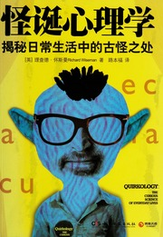

|  |
怪诞心理学：揭秘日常生活中的古怪之处 |
序
在大学里读心理系时，我曾把伦敦的国王十字车站当成心理实验室，在那里一待就是好几个小时。我的研究对象是那些刚刚见到自己的另一半走下火车的人。在他们深情相拥的那一刻，我会立即走上前去，同时启动藏在口袋里的秒表，然后对他们说：“打扰了，你们不介意做个心理实验吧？从我刚说‘打扰了’这几个字到现在，你们觉得已经过了几秒钟？”研究结果显示，沉醉在爱河之中的人会大大低估时间的流逝速度，正如爱因斯坦所言：“如果在一个漂亮的姑娘身旁坐上一小时，你会觉得只坐了一分钟；如果你在一个热火炉上坐了一分钟，你却会觉得仿佛坐了一小时。这就是相对论。”
甚至连泡茶这件事也引起了高尔顿的注意，为了用科学的方法找出泡杯好茶的完美之道，他花费了数月的时间，还做了一个特殊的温度计，让他可以随时测量茶壶里的水温。经过严谨的测试后，高尔顿得出了如下结论：
当茶壶内的水温维持在180—190华氏度（82～87摄氏度）之间，而且茶叶浸泡时间达到8分钟时，泡出的茶味道最醇，喝起来最香，而且绝对不会太苦，也不会太淡。
简单地说，怪诞心理学是以科学的方法研究日常生活中稀奇古怪的各个方面。在过去的几百年里，虽然已经有少数先行者在心理学研究中采用了这种方法，但这种方法却一直未被认定为一门严肃的社会科学。这些研究人员追随着高尔顿的脚步，在主流科学家怯于涉足的领域内勇敢前行。他们业已完成了以下创举：
- 研究过在足球场中至少需要多少人才能形成人浪；
- 请人试着记住一万张照片，以此来记录视觉记忆的上限；
- 确定了水果的个性特质（柠檬不讨人喜欢，洋葱很愚钝，蘑菇一心想着攀附权贵）；
- 偷偷计算正戴棒球帽与反戴棒球帽的人数；
- 站在超市外面，手捧募捐箱，暗中衡量请求捐款的不同措辞对实际捐款金额的影响（一句简单的“一分钱也能帮上忙”几乎总会让捐款加倍）；
- 发现越临近圣诞节，孩子们画的圣诞老人会越大，到了1月，这位老公公的个头在孩子们的画笔下就明显缩小了。
第1章 你的生日到底隐含着怎样的秘密——时间心理学
在过去的几年里，有一小部分热情高涨的科学家投入了大量的时间和精力去研究人们的出生日期和他们的生活之间的关系。他们的研究范围涉及甚广，其中包括剖析那些残酷无情的冷血杀人狂、追踪数以百万计的美国纳税申报表、分析英超足球明星的生日、让两万多人上线进而评估他们各自的运气，甚至还有科学家让一名年仅四岁的小孩预测全球股市的发展趋势。虽然他们的工作进展缓慢，但有一点是毫无疑问的，那就是他们逐渐从笼罩在星座之上的层层迷雾中发现了一个事实：我们的出生日期的确会在很多方面影响到我们的思维方式和行为举止。
先知和收益
英国科学促进会成立于1831年，创办人是苏格兰著名科学家大卫·布鲁斯特爵士。英国科学促进会拥有几项备受赞誉的创举。1841年，表示恐龙的英语单词dinosaur首次出现在了英国科学促进会的会议上；在1860年的年会上，物理学家奥利弗·洛奇向与会者演示了无线传输技术，这是该技术最初的几次公开亮相之一；同样是在1860年，有关物种起源的著名论战也是在英国科学促进会的会议中上演的，论战的双方分别是生物学家赫胥黎和牛津教区主教塞缪尔·威尔伯福斯。（威尔伯福斯主教代表的是宗教势力，由于他非常“狡猾”，而且能言善辩，所以为自己赢得了一个绰号“油嘴山姆”。）据传言，当时有这么一番情形：威尔伯福斯转向赫胥黎，然后以讥讽的口吻问道：“你那类人猿的血统，是来自祖父一方呢，还是祖母一方？”赫胥黎并没有被主教咄咄逼人的攻势吓倒，他先是平静地转身，小声对自己的同事们说：“是上帝把他交到我手里的。”然后他直视着主教宣称自己宁愿认一只类人猿做祖父，也不愿与一位主教扯上什么关系。
英国科学促进会每年都会举办为期一周的科学庆典，2001年，他们邀请我去做一个实验，该实验是科学周活动的一个组成部分。收到邀请函之后，我碰巧在报纸上看到了一篇有关占星学的文章，文章讲述的是当时最流行的金融占星学，而且提到有些占星师宣称一家公司的设立日期能够影响到其日后的经营业绩。如果这是真的，那么遍布全球的投资者就有了一个至关重要的投资参照依据，于是我决定研究一下这个“课题”，看看上帝的旨意是否的确能够左右一家公司的发展前景。
在金融世界里，一周的时间的确不能算长，因此我们决定将实验的时间跨度延长为一年。事实证明，这12个月给人的感觉可真够漫长的，全球经济持续低迷，市场整体下跌幅度高达16%。在实验进行到接近一整年时，我们请巴克莱股票经纪公司的专家们对三位参与者的投资组合再次进行价值评估。这一次，三者之间的差距就更大了：我们的资深分析师赔了46.2%，金融占星师的成绩相对要好一些，但依然亏损了6.2%，小蒂娅则再次荣登冠军宝座。在大盘持续下跌的情况下，她竟然获利5.8%。
占星预言
要想完全理解艾森克对于占星术的研究，就有必要对他所从事的个性分析研究有所了解。艾森克曾安排了成千上万的人填写调查问卷，然后借助强大的统计技巧对结果进行分析，从而找出人与人在个性上存在差异的主要纬度。研究结果显示，人们的个性并没有想象的那么复杂。事实上，在艾森克看来，它们只是在少数几个最为基本的特质上存在一定的差异，艾森克将其中最为重要的两个特质分别定义为“外向”和“神经质”。艾森克人格调查表就是用来衡量这些特质的，整个调查表包括大约50个不同的描述。接受调查的人需要针对每一个描述圈选“是”或者“否”，从而确认每一句话是不是在描述他们自己。
艾森克所定义的第一个纬度是“外向”，也就是人们在生活中所呈现出来的活力。得分较高者被称为“外向型的人”。这种人比较容易冲动、乐观、开朗、喜欢与人相处、追求即时享受、拥有较多的朋友和广泛的人脉，但同时也更有可能欺骗自己的伙伴。得分较低者则被称为“内向型的人”。这种人显得更为小心谨慎、善于约束自己，相对也更保守一些。他们的社交圈往往仅限于几个非常亲近的朋友，他们对五彩斑斓的夜生活没有什么兴趣，而宁愿待在家里读一本好书。通常来说，大部分人的性格会介于“外向”和“内向”之间。艾森克人格调查表在衡量这个纬度时常会用到这样的描述：我是派对上的灵魂人物，置身于人群之中我感觉很轻松自在，等等。
艾森克所定义的第二个纬度是“神经质”，这个纬度衡量的是一个人的情绪稳定程度。得分较高者更容易产生焦虑情绪、比较没有自信、常常为自己设立不切实际的短期目标或长期目标，而且会更经常性地出现怨恨和嫉妒心理。相反，得分较低者更容易保持心态稳定、更容易放松自己，在遭遇失败的打击后情绪也更容易恢复，这种人很善于用幽默来化解焦虑，有时候甚至会因为面临压力而更加斗志昂扬。艾森克人格调查表在衡量这个纬度时常会用到这样的描述：我总是因某些事情感到忧心忡忡，我能够轻易摆脱压力的困扰，等等。
让怀疑论者大吃一惊的是，调查的结果竟然与古老的占星学传说完全吻合。星座与外向有关的人在外向特质上的得分的确要比其他人高一些；与土象星座的人相比，三个水象星座的人在神经质特质上的得分也明显要高出一截。占星学期刊《现象》也因此宣称，这些发现“可能是本世纪占星学上最为重要的进展”。
然而，艾森克自己却对调查结果产生了怀疑，因为他突然意识到参加调查的人事实上已经对占星学笃信不疑了。这些人事先早已知晓占星学对他们个性的预测是什么。艾森克担心这种先入为主的想法可能会得到并不准确的调查结果。会不会因为调查对象觉得自己应该具备占星学所赋予他们的性格而选错了答案，从而引出了那个让怀疑论者大跌眼镜的调查结果？换句话说，这个调查结果可能只是心理作用导致的结果，而跟调查对象出生时的星象位置毫不相干。
有了这个念头后，艾森克又额外做了两个实验。第一个实验的对象是1000名孩子。他们几乎不可能听说过性格和星座之间的关系。这一次，调查结果出现了颠覆性的变化，而且显然与古老的占星学传说毫无吻合之处。孩子们在外向和神经质两个体质上的得分跟他们的星座根本就扯不上任何关系。为了进一步验证生日和个性之间到底有没有关联，艾森克将调查对象从孩子转到了成人，这一次，调查对象对占星学的了解程度深浅不一。结果发现，如果调查对象很清楚星座对性格有何影响，他们的问卷结果跟占星学传说的吻合程度就会非常接近。相反，如果调查对象对占星学没有太多了解，他们的问卷结果跟占星学传说就不会那么一致了。结论已经很明确了，出生时的星象位置并不会对一个人的个性产生什么魔法效应。然而，的确有这么一些人，由于对占星学中星座和性格之间的关系非常熟悉，竟然真的就变成了具有某种星座特质的人。在一次探讨科学和占星学的会议上，艾森克公开了自己的后续研究成果。后来为其作传的作家对当时的情景做了如下的描述：“很多占星学家的反应相当激烈，在他们中间弥漫着一种强烈的情绪，他们感觉艾森克欺骗了他们，开始的时候艾森克俨然是他们的代言人和保护神，后来却令他们难堪，这无疑是对他们的背叛。”
时间双胞胎和波哥小丑
2000年，我应邀到澳大利亚的国际科学大会上发表演讲。我很高兴地发现杰弗瑞竟然也在演讲嘉宾名单中。在演讲的时候，杰弗瑞谈到了自己近期从事的最大的研究项目，他将该项目称为占星术的“决定性试验”。和很多好的点子一样，这个项目其实比较简单。依据占星师的说法，出生时的星象位置可以预测一个人的个性，并会对他们生命历程中的重大事件产生一定的影响。如果真的是这样，在同一时刻、同一地点出生的人在性格和命运上应该非常相似才对。事实上，杰弗瑞指出，他们应该是“时间双胞胎”。
这一次，终于轮到怀疑论者欢呼了。杰弗瑞并没有发现太多证据可以证明时间双胞胎之间存在相似性。以1958年3月4日11点5分出生的人为例，他与晚自己几分钟出生的时间双胞胎之间的相似性，和他与晚自己一天出生的人之间的相似性并没有明显的差异。
汉斯·艾森克、杰弗瑞以及其他人的研究成果显示，占星预言通常来说根本不准。这就让我们不得不在脑海里画一个大大的问号了：既然不准，为什么还有那么多人笃信占星术呢？
伯特伦·弗瑞尔教授与夜店笔迹学家
弗瑞尔只不过大致翻阅了那本星座书，然后从不同的星座说明中挑选了10句话，凑成了一段文字。尽管班上的每一个学生拿到的都是同样的性格描述，但竟然有87%的学生给出的是4分或者5分。也就是说，他们都觉得测试的结果还是很准确的。弗瑞尔独创的这份性格描述现在早已闻名全球，成千上万的心理学实验和电视真人秀节目中都曾用过这份性格描述。
自从在夜店遇到那位笔迹学家后，弗瑞尔就留下了一个未解的心结，经过这次实验后，心里的疑惑就烟消云散了。占星学和笔迹学事实上并不需要真的很准，只要看起来很准就足够了。只要给人们一个非常概括的描述，他们的大脑就会诱使他们相信这些描述具有非常独到的见解。
三周后，弗瑞尔告诉班上的学生，由于自己一时疏忽，竟然不小心把评分表上的名字给删除了，所以他希望大家能够诚实地按照最初的评分重新在拿到的性格描述上圈选一次。事实上，他根本就没有删除学生的名字。他这么做的目的就是核对学生再次给出的分数是否完全一致。结果证明，在原来圈选“非常准确”（给出了最高分5分）的学生中，竟然有一半的学生认为那份性格描述说得其实不是那么回事，并且说自己此前给出的分数本来就比较低。弗瑞尔这次终于搞明白了，看起来那些容易上当受骗的人宁可欺骗自己，也不愿意坦然面对自己容易上当受骗这个事实。
巴纳姆效应
高奎林由此受到启发，于是灵机一动，在一家知名的报纸上刊登了一则广告，声称可以免费为人们提供电脑生成的星座分析报告。法国各地共有150人对这则广告做出了回应。高奎林把贝蒂德的星座分析报告寄给了每一个人，并让他们通过打分的方式评价收到的分析报告是否准确地描述了他们的个性。结果显示，有94%的人认为分析报告的内容非常准确。有一个人在给高奎林的信中写道：“这台机器生成的报告简直太棒了……我得说这简直太超乎想象了。”另外一个人则写道：“一台电子设备竟然能够算出人的性格和未来，这简直太不可思议了。”还有一些人被这份报告的精准性深深地折服了，他们竟然愿意付钱给高奎林，以便得到更为详尽的分析报告。
那么，为什么会有这么多人被这种类型的描述骗得晕头转向呢？
人们之所以认同这些描述，是因为对于大多数人来说这些描述都是正确的。毕竟，谁会强烈质疑自己做出的重要决定呢？谁能否认希望别人欣赏和钦佩自己呢？谁不会对安全感有迫切的渴求呢？即便是一些听起来很个性化的描述，对于很多人来说也可能是正确的。几年前，我的同事心理学家苏珊·布莱克摩尔对6000多人进行了一次调查。她向这些人陈述了一些占星学常用的描述，这些描述看起来很个性化，比如“你家里有人叫杰克”等。调查结果显示，大约1/3的人在左侧的膝盖上有一个疤，1/3的人拥有亨德尔《水上音乐》的磁带或CD，1/5的人家里有人叫“杰克”，1/10的人在前一晚的梦中见到了已经多年未谋面的人。许多巴纳姆式的描述看起来似乎都是正确的，这是因为大部分人的想法和行为都很容易被猜中。
此外，还有所谓的“谄媚效应”。大部分人更愿意相信让他们自己看起来更正面和更积极的事情，所以他们会认同自己还有很多未能得到发挥的潜力以及自己是喜欢独立思考的人之类的描述。这种效应解释了为什么会有大约50%的人对占星术深信不疑。从传统上来说，十二星座可以分为六个“正向”星座（白羊座、双子座、狮子座、天秤座、射手座和水瓶座）和六个“负向”星座（金牛座、巨蟹座、处女座、天蝎座、摩羯座和双鱼座）。通常来说，正向星座的相关特质听起来要比负向星座的相关特质更讨人喜欢。一般认为天秤座的人倾向于追求和平和美感，而金牛座的人更注重物质，也更容易不满。威斯康星大学的心理学家玛格丽特·汉密尔顿曾让人们提供他们的出生日期，并依据自己相信占星术的程度从0—7分中选一个分数。正如“谄媚效应”所预测的那样，很明显，相对于负向星座的人而言，正向星座的人更有可能相信占星术。
弗瑞尔及其追随者所做的研究表明，在过去的几千年里，星座已经欺骗了数以百万计的人。占星师完全可以信口雌黄，只要说的时候足够含糊其词，足够阿谀奉承，大多数人都会迫不及待地表示占星师的分析“非常准确”。因此说，并没有太多的科学证据可以用来支持占星术。既然如此，我们就很容易得出如下的结论：事实上，一个人的出生日期跟真正的科学毫无关系。
没错，我们很容易得出上述推论，不过这种推论却是错误的。
时间和心理的科学研究
时间心理学是一门研究时间和心理的新学科，到目前为止还属于小众研究，也比较令人费解。该领域的大部分研究工作是与昼夜节律、轮班工作和时差息息相关的。
1962年，法国的洞穴探险家和地质学家米歇尔·希弗瑞决定在暗无天日的地下待上两个月，以此来追踪冰河在地下洞穴中的移动情况。希弗瑞并没有百无聊赖地坐在那里记录测量数据，而是充分利用这段难得的地下独处时间，顺便做了一个独特的时间心理学实验。希弗瑞决定不带任何时钟进入洞穴，而是强迫自己完全依据自身的生理时钟决定作息时间。希弗瑞与外界的唯一联系方式就是一部电话，他可以直接打给地面上的研究团队。每当要睡觉和刚睡醒时，他都会打电话给研究团队。在清醒的时候他偶尔也会打几个电话。每当打电话的时候，地面上的研究人员都不会向他透露真实的时间。在地下375英尺（约114米）的洞穴里，希弗瑞伴着一顶小小的尼龙帐篷度过了60个不见天日的昼夜。电话记录显示，他判断时间的能力受到了严重的扭曲。到实验的最后阶段，他打电话给地面研究人员时还坚信自己一个小时前才打过电话，而事实上好几个小时已经过去了。两个月后，地面研究人员让希弗瑞离开了洞穴，当时他还坚持说实验肯定是提前结束了，在他看来，自己在地下才刚刚度过了34天而已。这项实验清楚地表明：月光的确有助于我们维持生理时钟的正常运转。
其他的时间心理学研究则致力于探索减少时差影响的方法，时差可能是现代人的生理时钟最常遇到、最为恼人的干扰了。20世纪90年代末，康奈尔大学的斯科特·坎贝尔和帕特里夏·默菲做了一个用光线照射人的膝盖后面的实验，该实验成为这一领域最不寻常也最具争议性的研究之一。此前的研究表明，如果以光线照射人的双眼，可以欺骗大脑加速或减缓人体生理时钟的运转，因此可以借此减小时差所带来的影响。坎贝尔和默菲想要知道，人体的其他部位是不是也能够监测到类似的信号。由于膝盖的后面有很多靠近皮肤表层的血管，所以他们决定用特制的卤素灯照射这一区域来验证自己的假设。在一个小范围的研究中，他们发现了自己想要的证据：跟直射在眼睛上的光线一样，照射在膝盖后面的光线也具备改变生理时钟运转的能力。
那么，占星术的根本概念和这个有趣的科学研究又有什么关系呢？并不是所有的时间心理学研究都需要研究人员在洞穴里待上几个月，或者用光线照射膝盖的后面。这个颇令人费解的学科还有另外一个分支——有一小部分科学家正在研究生日可能对人们的思想和行为产生的微妙影响。
这个分支在行为科学中是很不寻常的，其背后所隐藏的概念已经因荷兰心理学家艾德·杜丁克的研究得到了近乎完美的诠释。杜丁克对近3000名英国职业足球运动员的生日进行了分析，结果发现在9月和11月之间出生的运动员数量几乎是6月和8月之间出生人数的两倍。看起来一个人的生日好像可以预测其在运动方面所能够取得的成就。有些人可能会把杜丁克的分析结果当成支持占星术的有力证据，他们宣称处女座、天秤座、天蝎座和射手座所对应的星象位置在塑造一流的运动员方面扮演着非常关键的角色。然而，杜丁克发现的奇妙分析结果还有一种更有趣、更切合实际的解释方法。
杜丁克的研究是在20世纪90年代早期进行的，在那个时候，英国的足球新秀要想参加职业足球赛，就必须在赛季开始的时候至少年满17周岁，而赛季的开始时间是在8月。也就是说，在9月和11月之间出生的潜在选手要比在6月和8月出生的选手大10个月左右，所以身体也更加成熟一些。足球是一个需要体力、耐力和速度的运动项目，这多出来的几个月时间无疑是一种有力的竞争优势。结果就是在9月和11月之间出生的新秀更有可能被选中参加职业足球比赛。
多年的研究已经提供了大量的证据，足以证明出生日期对于不同运动项目选手的潜在影响。不管赛季何时开始，出生月份在赛季开始的前几个月的选手在数量上都会占据优势。无论是美国职业棒球大联盟，还是英国的郡县板球赛，无论是加拿大的冰上曲棍球赛还是巴西的足球赛，运动员的出生月份都跟他们的比赛成绩密切相关。
这种时间心理学效应并不仅仅发生在职业运动员的身上，它们也会影响到另外一个因素，这个因素在每个人的生活中都扮演着重要的角色，这就是人们的运气。
天生幸运儿？
类似的实验结果告诉我们，那些志愿者的运气好坏在很多情况下是由他们的思想和行为所决定的。幸运的人通常乐观开朗，而且充满活力，所以容易接受新的机遇和经验。相反，不幸的人性格相对孤僻，而且反应不够敏捷，所以常常对人生感到不安，不太愿意充分利用摆在面前的大好机会。
最近，我在该领域还做了一些研究，同样跟时间心理学有关。俗话说，有些人生来就是幸运儿。我的研究目的就是探讨这句话是不是属实。这个项目其实源自我在2004年收到的一封古怪的电子邮件，发件人是瑞典于默奥大学医学院的捷安堤·乔泰教授。
捷安堤的大部分研究工作都是在探讨人们的出生日期跟其心理和生理健康之间的关系。在其中的一项研究中，他要求大约2000人完成一份调查问卷，借此来衡量他们自认为喜欢追求刺激的程度，然后查看问卷的得分是否跟人们的出生日期相关。追求新奇和刺激是我们人性的一个基本方面。喜欢寻求刺激的人无法容忍他们此前已经看过的电影，喜欢与他们捉摸不透的人相处，容易被登山和蹦极等具有较高风险的运动吸引。与此相反，不爱寻求刺激的人喜欢一遍又一遍地看同一部电影，感觉跟自己非常熟悉的老朋友相处非常舒服，而且不喜欢去他们从来没有去过的地方。捷安堤的研究结果显示，喜欢寻求刺激的人通常是在夏天出生的，而那些喜欢熟悉事物的人则更可能出生在冬季。
实验的结果相当明显。捷安堤已经发现夏天出生的人更乐于冒险。我们的实验结果也显示，与那些冬季（9月到2月）出生的人相比，夏季（3月到8月）出生的人也会觉得自己更幸运一些。在12个月份出生的人中，幸运度的自我评价曲线呈波状分布，其中5月最高，10月最低（如下图所示）。只有6月与整体的分布形态不符，我们将其归因于统计偏差。
这种现象的出现有很多种解释，其中大多跟冬天的环境温度比夏天低这个观点有关。可能是因为冬天出生的婴儿要面对更为严酷和恶劣的环境，所以会比夏天出生的婴儿与看护人的关系更为亲近，所以在生活中比较不喜欢冒险，运气相对来说也要差一些。也有可能是因为在严冬生产的女性摄取的食物不同于在夏季生产的女性，所以孩子的个性也会有所不同。无论是什么原因，这种效应从理论上来说还是很有趣的，它暗示着出生时的温度对于个性的发展有着深远而长久的影响。
不过，在接受任何与温度相关的解释之前，我们必须首先排除其他可能的影响机制。或许这种效应跟温度并没有任何关系，而是跟另外一种会随着月份不同发生变化的因素相关。支持占星术的人可能会说，天体活动会影响一个人的个性，夏季时行星和其他星辰的排列分布注定了会给新生儿带来好运。
要对各种不同的解释进行有效的评估只有一种方式，那就是到一个温度跟月份没有太大关系的地方重新做一次研究。如果跟温度相关的解释是正确的，那么在温度较高的月份出生的幸运儿在比例上应该还是会高一些。如果占星术给出的解释是正确的，那么5月、6月、7月就应该是新生儿的幸运月。
对于生活在南半球和北半球的人来说，温度和月份的关系刚好相反。在北半球，6月是很炎热的，而12月是很寒冷的。在南半球，6月却是严寒的冬季，而12月是烈日炎炎的夏季。正因如此，我决定到地球的另一端去重新做一次研究，看看到底是与温度相关的解释更有说服力，还是占星术就“天生幸运儿”给出的解释更为合理。
达尼丁市位于新西兰南岛的东南岸，这里每两年举办一次科学节。2006年，我收到了新西兰科学节主办单位发来的电子邮件。他们已经得知我想在南半球重新进行一次“天生幸运儿”的实验，所以想知道我是否愿意在他们的科学节上重复再做一次研究。我当然非常乐意，所以很快就起程前往新西兰了。
我为第二次“天生幸运儿”实验重新设计了一个网站，新西兰和澳大利亚的媒体也都对该实验进行了广泛的报道，这非常有助于吸引人们访问我所设计的网站。在短短的几天时间内，就有2000多人提交了自己的出生日期，并给自己的人生幸运度打了分数。实验结果显示，与温度相关的解释占据了绝对上风。那些在南半球的夏季（9月到2月）出生的人觉得自己要比在冬季（3月到8月）出生的人幸运多了。这次实验得出的幸运度自我评价曲线也呈波浪状，不同的是幸运儿比例最高的月份变成了12月，比例最低的则是4月。
“天生幸运儿”之类的研究显示，出生月份的确会对人们的行为方式产生细微的影响。不过，也有一些研究人员研究过两者之间另外一种完全相反的效应。也就是说，人们的行为会如何影响他们对自己和他人真实生日的阐述。
逃税和撒谎神职人员的时间心理学
依据美国的税收制度，如果小孩在12月31日出生，那么家庭就可以享受此前12个月的税收优惠。但如果孩子出生于1月1日，就无法享受这种优惠。正因如此，如果孩子的预产期是在年底，那么父母就会受到财务动机的强烈驱使，希望孩子能够在12月31日的午夜前降临人世。虽然孩子的父母无法准确预知自然生产的日期，但他们可以通过催生或剖腹产的方式操控孩子的生日。
父母真的会仅仅为获得税收优惠就人为操控孩子的生日吗？为了找出答案，来自美国雪城大学的斯塔西·迪克特·康林和来自肯塔基大学的阿米塔·桑德拉分析了美国1979—1993年的出生记录。他们将研究的时间锁定为12月的最后7天和1月的前7天。结果发现，每年12月底的出生人数都会急剧上升，只有一年例外。
两位教授开始对手头的数据进行更为深入的探索，以便弄明白这种不寻常的状况是不是因孩子的父母贪图税收优惠而导致的。他们选出了200多名在元旦前后一周出生的新生儿，仔细分析每一个家庭的状况。他们针对每名新生儿算出两个数字——12月出生的福利待遇和1月出生的福利待遇。结果显示，如果孩子出生在12月的最后一周而非1月的第一周，家庭就能够明显获得更多的收益。这就是问题的关键所在：统计数据提供了有力的证据，父母的确会为了获得财务收益而操纵孩子的出生日期。
当然了，还有更简单的方法可以操纵你的生日。这种方法根本就无须催生或者剖腹产，那就是撒谎！
明星玩这种小把戏的背后心理其实并不难理解。在这个重视青春和美貌的社会里，很多人都希望自己看起来比实际年龄小一些，这也没什么可大惊小怪的。但是，那些赫赫有名的上流人物会不会对自己的具体出生日期动手脚呢？也就是说，他们会不会刻意隐瞒自己到底是在哪一天出生的？
为了找出这个问题的答案，加州大学戴维斯分校的阿尔伯特·哈里森教授和他的同事们仔细研究了几本不同的《名人录》和《先贤录》中收集的9000多份传记资料，并记录了在美国众所周知的日期当天或前后3天出生的人数，其中包括美国国庆日（7月4日）、圣诞节（12月25日）和元旦（1月1日）。如果仅就概率而言，在这些重要日子当天出生的名人比例应该和前后3天出生的名人比例大致相当。然而，哈里森他们得出的统计结果却不是这么回事儿，在美国国庆节、圣诞节或元旦出生的名人在数量上要明显多于这些重要节日前后3天中的任何一天。这种数量分布从概率上来说只有几百分之一，这就意味着有些名人向传记作者谎报了自己的生日，以便让自己与某个举国同庆的日子扯上关系。
哈里森认为这种效应源自一种不同寻常的心理现象，你可以将其称为“沾光”，但很多研究人员给它贴上了另外一个标签——“BIRG效应”。
BIRG效应在日常生活中也比较常见。我们经常听到人们无比自豪地说他们和某某名人上的是同一所学校，或者自己抢先一步观看了刚刚获得奥斯卡奖的影片（“猜猜昨天谁搭了我的出租车”）。这种效应甚至还对我们的日常用语产生了影响。心理学家曾偷偷研究过大学校园里的对话，结果发现当自己支持的球队在比赛中获胜或失利时，学生们的评论用语竟然有着巨大的差异。人们都迫不及待地想要沾沾获胜的球队的光（“我们赢了”），如果球队被打败了，他们则忙着跟失利这个事实保持距离（“他们输了”）。哈里森相信，那些富人和名人之所以谎报生日，无非也是想沾沾重大节日的光。某些广为人知的逸闻趣事也为这种诠释提供了支持性证据。闻名全球的爵士音乐家路易斯·阿姆斯特朗宣称自己生于7月4日。然而，音乐史学家泰德·琼斯研究了阿姆斯特朗的出生记录，结果发现其实他生于8月4日。哈里森教授的研究结果显示，阿姆斯特朗绝对不是唯一通过谎报生日往自己脸上贴金的名人。
为了进一步调查《名人录》和《先贤录》中的BIRG效应，哈里森和他的团队将研究的焦点集中到了显然跟其中一个重大节日最有联系的职业，也就是神职人员和圣诞节。通过仔细浏览收集到的数据，他们将神职人员分为了两大类：主教或更高级别的神职人员被归类为“知名神职人员”，其他人则被归类为“不知名神职人员”。仅就概率而言，这两类神职人员在圣诞出生的概率应该是相当的。但事实上，宣称生日与耶稣相同的知名神职人员在数量上要远远多于不知名神职人员。或许这也支持了一种常见的想法：神职人员的职位越高，就会越觉得自己需要跟上帝走得更近一些。
火星效应
法国研究人员米歇尔·高奎林曾把依据杀人魔头的详细出生资料得出的星座分析报告寄给普通大众，除此之外，他还对占星术的很多方面进行过测验。依据古老的星座传说，如果出生的时候某些行星高悬苍穹的话，就是一个很好的兆头，在此时此刻出生的人在今后的职业生涯中将会变得出类拔萃。20世纪50年代，高奎林开始研究这种说法的准确性。一部著名的19世纪法国传记辞典中收录了1.6万人的传记，高奎林据此绘出了这些人出生时的星图。结果他惊讶地发现，在这些人出生的时候，某些行星的确更有可能高悬于天际。这些证据后来被称为“火星效应”，就连对占星术持绝对怀疑态度的思想家也为此困惑了50多年。一位研究人员对此评论说：“即便说一切都以此为准可能也不为过。”汉斯·艾森克也指出：“相对而言，如果这个结果涉及任何造假行为，那么支持占星术的正面证据就相对减弱了。”到了2002年，研究过“时间双胞胎”现象的杰弗瑞·迪恩做了一项令人瞩目的科学研究。
在19世纪的时候，很多法国上流社会的人都对占星术深信不疑，他们会阅读流行的历书，并时刻关注着行星在一天中的确切位置。此外，父母还是通过口头方式向当地的户籍管理部门上报孩子的出生时间和日期，而不是由医生和助产护士精确记录并正式上报。迪恩在研究中发现了一些证据，这些证据暗示有些父母迫切希望自己的孩子能够在生活中出人头地，所以会刻意谎报孩子的出生日期，目的无非是让孩子降临人世这件大事从占星术上看起来有个好兆头。随后，这些家长会让孩子接受必要的教育并为他们提供其他所需的资源，从而促使这些上天注定的“占星预言”自然而然地成为不争的事实。简而言之，迪恩的研究结果显示，火星效应可能跟占星术没有什么联系，但与相对古怪的社会史息息相关。
到目前为止，我们已经探讨过人们是如何操纵自己的生日的，我们也探讨了他们为什么要这么做。然而，时间心理学还有一个更为古怪的层面，也就是对一个更为可怕的话题的研究——出生日期与死亡日期之间的关系。
死神与时间心理学
加州大学圣迭戈分校的社会学家大卫·菲利普斯是一个对死亡特别着迷的人。多数医学研究人员关心的是人为什么会死，但菲利普斯不同，他更关心人什么时候死。具体一点儿来说，他特别想知道人们能不能为了等到一个至关重要的时刻而拖延自己的死亡时间。1970年，他发表了自己的博士论文，论文的题目看起来非常古怪——“作为一种社会行为呈现形式的死亡”，从那时起，他便将这个话题当成了自己毕生的研究方向。
有一种观点认为，人们有足够的能力对自己的身体加以控制，从而将死亡延后一小段时间，这段时间对于他们至关重要，虽然事实上延后的时间非常有限，但看起来足以让他们经历一个重要的社会或个人事件。菲利普斯对这种观点充满了浓厚的兴趣。而且很显然有一些传闻逸事为这种观点提供了有力的支持性证据。创作了“史奴比”系列漫画的漫画家查尔斯·舒尔茨身价高达数百万，他就是在自己的最后一本漫画正式出版的前夕死去的，最后的一幅漫画中含有舒尔茨亲笔签名的道别信。此外，至少有三位美国总统是在7月4日告别人世的，其中包括约翰·亚当斯、托马斯·杰弗逊和詹姆斯·门罗，他们很可能是硬撑到美国国庆日才撒手人寰的。
在一项研究中，菲利普斯调查了人们是不是更有可能在全国性的节日后过世。研究圣诞节前后的死亡率似乎没有什么意义，这是因为死亡人数的突然上升完全可能是12月的气温骤然下降造成的。菲利普斯并没有试图说服全国人民改在其他某个随机确定的月份庆祝圣诞节，而是转而寻找一个每年发生时间都不相同的全国性节日，结果他找到了中国的中秋节。在中秋节的时候，家中年长的妇女会指挥女儿们准备丰盛的饭菜，从阳历来看，每年过节的时间并不固定。菲利普斯研究了中秋节前后中国的死亡记录，结果发现，在节前一周中国人的死亡率下降了35%，但在节后一周又上升了35%。
菲利普斯做过很多大型的研究项目，其中之一就是调查人们的出生日期会不会影响他们的死亡日期。为此，他分析了1969年到1990年期间多达300万加州居民的死亡证明。结果发现，在一年的所有时间里，女性更有可能在自己生日后的一周内去世。相对而言，男性在生日前一周去世的概率要远远高于一年中的任何其他时间。菲利普斯认为，这可能是因为女性倾向于把生日看作一次庆典，所以总会期盼生日的到来；而男性更倾向于将生日作为回顾人生历程的时刻，他们会在生日临近的时候发现自己取得的成就其实非常有限，进而感受到巨大的生活压力，所以死亡的可能性就大大增加了。在菲利普斯看来，这些研究证明死亡日期其实和季节波动、谎报死亡证明的信息、推迟生命攸关的重大手术以及自杀都没有什么关系。相反，这些发现证明了前面提到的观点：有些人的确有能力运用意志延缓或加速自己的死亡时间。
菲利普斯的这个观点引起了极大的争议和许多激烈的辩论。有些研究人员成功再现了菲利普斯及其研究团队的研究成果，另外一些研究人员或者未能得出同样的结果，或者激烈抨击菲利普斯所用的研究方法。不过，心理因素能够影响身体健康的观点得到了其他研究成果的支持。研究显示，乐观和人的健康是密切相关的。举例来说，1996年，一群研究人员开始调查200名芬兰人的健康思维与长寿之间的关系。研究人员把这些人分成了3组：悲观组的人觉得未来是非常渺茫的；乐观组的人对未来抱有较高的期望；而中立组的人对未来的预期并没有特别积极，也没有特别消极。随后他们对这3组人进行了为期6年的追踪研究，结果发现，悲观组的人比中立组的人更有可能死于癌症、心血管疾病和意外事故。相反，乐观组的死亡率比其他两组人都低很多。
其实，并非只有菲利普斯一个人在研究能够影响人们与死神会面确切时间的奇怪因素。1993年，《经济学与统计学评论》上发表了一篇文章，探讨了纳税义务是否会决定一个人的死亡日期。该文结合了菲利普斯奠基性的死亡研究方法和父母为获得减免税款而操纵子女生日的可能性（前文已有所阐述）。在这篇论文中，来自英属哥伦比亚大学的沃依切赫·科波兹科和密歇根大学的乔尔·斯莱姆罗德想知道人们会不会选择在最有利于后代获得遗产税优惠的时刻告别人生。
为了弄清楚事实是否如此，他们分析了美国的税收政策发生重大变革期间的死亡形态。从1916年颁布第一部税法至今，美国的税法共经历了13次大的改动。其中8次是提高税率，5次是降低税率。在媒体发布税法改革消息到新的税法正式实施期间大概有一周的时间。通过分析税法改革前后两周上报的死亡记录，研究人员发现了一些确凿的证据，这些证据明确无误地表明：在税率正式提高之前，死亡率会上升；在税率正式降低之后，死亡率会下降。正如论文的标题所言，有些人可能真的会“死也要节税”。
然而，这并不是他们所收集数据的唯一合理解释。死亡资料通常来说都是由可能继承遗产的亲属上报的，如果税收义务得以减少，他们肯定能从中受益。所以，这种情况也有可能证明，人们会谎报富有亲属的真实死亡时间，当然还有更糟糕的情况，那就是他们被谋杀的真实时间。
第2章 相信别人，不过别忘了切牌——撒谎与欺骗心理学
大象骗术、会交谈的大猩猩和说谎的孩子
进食时间一到，饲养员就会给每头大象一大捆干草。莫里斯注意到有那么几头大象会迅速吃完自己的那份干草，然后悄悄地走到那些吃得比较慢的同伴身边，开始漫不经心地摇晃鼻子。对于不知情的人来说，这些大象看起来只不过是在消磨时间罢了。然而，经过长期的仔细观察，莫里斯发现这种看似无辜的行为隐瞒了一个欺骗的意图。一旦晃动鼻子的大象距离另外一头大象足够近，它们就会迅速地卷起一些对方没吃完的干草，以最快的速度吞进自己的肚子里。众所周知，大象是高度近视的动物，所以那些吃得比较慢的同伴通常对这种偷窃行为一无所知。
有人或许会将这种晃动鼻子偷吃干草的举动看作是精心策划后实施的欺骗行为，是大象版本的“瞒天过海”。然而，这可能仅仅是我们一厢情愿的想法。有时候我们会跟自己的电脑或者汽车对话，好像它们通人性一样。因此，在看待四条腿的大象时，我们会情不自禁地采用拟人化的思维。那些看起来颇有心计的大象很可能只是偶尔发现了偷吃干草和晃动鼻子之间的关系。由于能够额外得到自己喜欢的干草，所以它们就开始重复这个动作，很可能它们并没有想刻意这么做。当然，要想搞清楚到底是怎么一回事，就必须确切地知道大象的脑子里在想什么。遗憾的是，大象并不能像人一样描述自己内心深处的想法和感受。不过，也有一个好消息。有些研究人员认为，虽然大象做不到这一点，但在进化过程中与人类最为接近的“祖先们”却已经做到了。
20世纪70年代，会聊天的大猩猩一下子成了人们谈论的焦点。作为探究跨物种沟通大型研究项目的一个组成部分，来自斯坦福大学的发展心理学家弗朗西·帕特森开始尝试教授两只低地大猩猩使用简单的美式手语。这两只大猩猩分别叫迈克尔和可可。在帕特森看来，大猩猩完全有可能与人进行有意义的沟通，你甚至可以跟它们谈论比较复杂的话题，比如说爱情和死亡。大猩猩的内心世界在很多方面都跟人类非常相似。比如说，迈克尔喜欢观看儿童节目《芝麻街》，而可可更喜欢《罗杰斯先生和他的邻居》。1998年，可可作为嘉宾参加了自己最喜欢的真人秀节目的拍摄，在其中帮助教育小朋友们“看人不能只看外表，还要看内涵”。迈克尔喜欢绘画，而且已经完成了很多绘画作品，其中包括他的自画像和几幅静物写生。他的作品很受人们欢迎，并且已经在很多展览馆展出过。公众对于可可同样并不陌生，她已经出演过好几部电影。迈克尔·克莱顿的畅销书《刚果惊魂》中会说话的大猩猩艾米的创作灵感也是来自可可。可可还在自己的网站宣传片中担当了主角（通过她的沟通技巧募集善款），并在1998年参与了有史以来的第一次跨物种网络聊天。对话是在访问者、可可和帕特森教授之间展开的，公开的对话内容显示，要了解大猩猩的只言片语的确还有些困难。
虽然沟通起来还存在困难，但负责训练迈克尔和可可的驯兽师相信，他们已经发现了一些蛛丝马迹，能够证明这两个毛茸茸的大家伙掌握了撒谎的小伎俩。有一次，可可弄坏了一只玩具猫，然后却用手势表示是其中的一名驯兽师弄坏的。还有一次，迈克尔把一名驯兽师的夹克给撕坏了，当驯兽师质问他谁应该对此负责时，他借助手势直接将责任推到了可可身上。驯兽师对他的回答表示怀疑，于是迈克尔表示其实犯错误的是帕特森教授。在驯兽师的再三追问下，迈克尔终于露出了尴尬的表情（对于一只大猩猩来说这可不太容易），放弃抵抗，全盘招供。大象偷吃干草的行为完全是观察的结果，但大猩猩撒谎看起来很可能是刻意为之，他们那明显的沟通技能为此提供了有力的证据。
在探究孩子撒谎行为的实验中，最著名的就是要求小孩子不要偷看他们喜欢的玩具。在这些研究中，一个小孩子会被领进实验室，研究人员要求他面朝墙壁站好，然后说会在他身后几英尺的地方放一个很好玩的玩具。把玩具放好后，研究人员会对孩子说他必须离开实验室一会儿，并要求孩子不要回头偷看摆好的玩具。在接下来的几分钟里，隐藏的摄像机会拍下孩子的一切举动。随后，研究人员回到实验室，然后问孩子是否偷看了。结果表明，在已满三周岁的孩子中，大约有一半的人会对研究人员撒谎。如果把年龄段提高到五岁，那么所有的孩子都会偷看，而且全部都会撒谎。实验结果清楚无误地表明，从我们学会说话的那一刻起，我们就已经学会撒谎了。还有一点看起来更令人惊奇，当孩子的父母看到孩子否认偷看玩具的录像时，他们竟然无法分辨自己的孩子说的是真话还是谎言。
谎言
谎言曾经改变了世界历史的进程。就在第二次世界大战一触即发的紧急时刻，张伯伦和阿道夫·希特勒于1938年9月在慕尼黑会面，商讨“和平”解决德国和捷克之间的紧张局势。张伯伦万万没有想到，希特勒撒了一个弥天大谎。希特勒暗地里积极准备侵占捷克，因此迫切地希望能够阻止捷克集结强大的抵抗力量。这位元首信誓旦旦地向张伯伦保证，他绝对没有袭击捷克的想法，英国首相相信了他的话。会面结束几天后，张伯伦给他的妹妹写了一封信，在信中他是这样描述希特勒的：“当他做出承诺的时候，你就知道这是一个值得信赖的人。”张伯伦确信希特勒说的都是实话，所以力劝捷克不要动员军队，否则可能会被德国视作具有攻击性的举动。张伯伦万万没有想到，不久之后德国就向捷克发动了闪电战，并很快击垮了准备不足的捷克军队，并由此引发了席卷全球的第二次世界大战。如果张伯伦在那次决定性的会面中能够识破希特勒的谎言，当今的世界可能就完全是另外一副样子了。
世界领导人当然不是唯一的说谎者和受骗者。我们中的每一个人都会受到谎言的影响。几年前，我跟《每日电讯报》合作，在全国范围内展开了一场有关谎言的调查。在所有的反馈中，只有8%的人号称从来没有撒过谎，虽然调查采用了匿名方式，但我依然怀疑这8%的人中大部分都没有说实话。还有一项调查是让人们在为期两周的时间里详细记录每天的谈话内容，而且不能遗漏自己说过的每一句谎言。结果显示：大部分人在一天的时间里会说两次大的谎，1/3的谈话都会含有某种形式的欺骗，80%的谎言没有被揭穿，超过80%的人会为了获得一份工作而撒谎（大部分人说他们觉得雇主并不希望求职者坦言自己的背景和经历），此外，超过60%的人至少有一次对他们的伴侣不忠。
你是不是一个撒谎高手呢？很多人可能觉得自己比较善于撒谎，不过，事实上人们在蒙蔽他人的技能上存在着天壤之别。通过一个简单的测试，你就能大概知道自己的撒谎能力如何了。事实上，你已经做过这个测试了。
在本书最开始的部分，我已经让大家在额头上画了一个Q（怪诞心理学的英文首字母）。如果当时你没有做，那么请现在就做一下。抬起你平常用来写字的那只手，然后用食指在前额上画一个大写字母Q。有些人画的Q只有自己能够看到，也就是说，Q的小尾巴是朝向右手侧的。另外一些人画的Q则只有他们对面的人才能够看到，也就是说，Q的小尾巴朝向左手侧。这个小测验能够大体衡量一个人的“自我监控”能力。自我监控能力强的人倾向于让他们对面的人看到自己画的是一个Q。而自我监控能力弱的人则会关注于让自己看到画的是一个Q。那么，这种自我监控能力跟撒谎又有什么关系呢？事实上，自我监控能力高的人比较注重别人怎么看他们，他们喜欢成为众人瞩目的焦点，能够很快让自己的行为适应所处的环境，并且很善于操控别人看待他们的方式。因此，他们更有可能成为撒谎高手。相反，自我监控能力弱的人即便是在不同的环境中看起来也还是“同一个人”。他们的行为在更多的情况下是由他们内心深处的感受和价值观所左右的，他们并不太在意自己的行为会给周围的人造成什么影响。因此，这种人在生活中不太会撒谎，也不太可能欺骗他人。
在过去的很多年里，我对很多人做过这个测试。随着时间的流逝，我有了一个新的发现。有那么一小群人，一听到这个测试是干什么的，就马上说服自己改变内心深处的想法，直接把Q的小尾巴撇到相反的方向。这些人可以对摆在自己面前的证据视而不见，而是扭曲事实，强迫自己变成他们想要成为的人。因此说，这个小测验也大概能够衡量出你是否善于欺骗自己和欺骗他人。
1994年，刚到赫德福德大学任职不久，我就收到了一份群发给英国各地学者的电子邮件。邮件中说即将举办全国性的科技庆祝活动，该活动的持续时间长达一周，所以能够为学者们提供需要公众参与的大规模实验所需的各种资源。被选中的实验项目将会在英国广播公司的王牌科技类节目《明日世界》上直播，观众人数将会是百万级的。邮件的结尾说欢迎学者们贡献自己的好点子。我觉得借此机会测试全国的测谎技巧肯定非常有趣，所以建议请几位政客到电视节目中说谎或说真话，并让公众判断到底哪些是谎言。在我看来，通过这种方式就有可能科学地判断出哪个政党内有天才的说谎家。几周后，我高兴地得知我的提议竟然被选中了，于是开始细化和完善研究方案。
打了一大通电话后，我终于明白了，没有政客愿意参与这个实验，因为他们都是可怕的说谎家（他们的话根本就没人相信）。于是我们开始寻找最佳的替代人选，最后决定向政治类电视访谈节目的主持人罗宾·代伊爵士发出了邀请。罗宾爵士在英国广播公司的地位就像沃尔特·克朗凯特在哥伦比亚广播公司的地位一样。在对那些政客进行访问时，他提问的风格完全可以用咄咄逼人来形容。他也因此成为英国电视节目中最受观众信赖的人之一，并为自己赢得了“大审判官”的美誉。罗宾爵士欣然接受了邀请，这无疑让我们非常高兴。
实验的设计很简单。我会对罗宾爵士进行两次访谈，每一次都会请他描述一下自己最喜欢的电影。在其中的一次访谈中，他说的每一句话代表的都是他最真实的想法。而在另外一次访谈中，他的描述将会谎话连篇。随后我们会在电视上播出这两次访谈，看看公众能不能分辨出罗宾爵士在哪次访谈中撒谎了。
为了做好这个项目，英国广播公司派出了天才的年轻导演西蒙·辛格。西蒙后来写过几本畅销的科学图书，其中包括《费玛最后定律》和《密码书》。我们两个人后来合作过很多不同的项目，但第一次谋面是在伦敦一家大饭店的大堂里，目的就是探讨如何拍好罗宾爵士的“真话”和“谎言”访谈。摄像机刚架好不久，门就被推开了，罗宾爵士走了进来。要认出他来一点儿都不难，只要看看那标志性的粗框眼镜和彩色领结就可以了。在摄像机前坐好后，他看起来竟然略显紧张，以前可能都是他向别人提出问题，这次却轮到他来回答提问了。我们开始了第一个访谈，我请他描述一下自己最喜欢的电影。他回答说自己最喜欢看克拉克·盖博主演的《乱世佳人》。
投票通道关闭后，我们立即着手分析实验结果。52%的观众认为罗宾爵士并不喜欢《乱世佳人》，另外48%的观众则认为他在回答有关《热情似火》的问题时撒谎了。随后，我们为观众播放了一小段视频。我在剪辑中问罗宾爵士他是否真的很喜欢《乱世佳人》。他的回答可谓言简意赅，直指要害：“天哪！我当然不喜欢！那是我看过的最无聊的电影。每次看我都会睡着。”在节目的最后，我们公布了调查的结果，并做了必要的解释：在揭穿谎言的时候，公众所掌握的技巧其实比随意猜测好不了多少。
实验的结果非常一致：如果想要察觉谎言，或许掷硬币决定还比较简单。无论男女老幼，很少有人能够准确地察觉谎言。调查结果还显示，我们甚至无法分辨自己的另一半是否在说谎。在一系列探究爱情欺骗的实验中，我们让一位已结婚多年的人看一连串的幻灯片，幻灯片上是一个非常迷人的异性，然后要求他/她尝试让自己的另一半相信他/她觉得那位迷人的异性其实没有什么吸引力。结果发现，很多相处良久的伴侣也很难发现自己的另一半正在撒谎。有些研究人员相信，很多结婚多年的夫妇之所以能够长期厮守，最根本的原因就在于他们彼此无法识破对方的谎言。
普通大众并不需要为自己无法察觉谎言而忧心忡忡。毕竟，每个人的情况其实都差不多。加州大学旧金山分校的心理学家保罗·艾克曼做过一项研究，他让不同的专家组观看说谎者和说实话者的录像带，并请他们确定谁是说谎者。这些专家包括测谎仪操控人员、抢劫案的调查人员、法官和精神科医师。虽然他们都尽了最大的努力，但没有任何一组人员的表现比胡乱猜测的结果更准确。
那么，人们为什么无法准确地察觉谎言呢？来自得克萨斯基督教大学的心理学家查尔斯·邦德教授所从事的研究为我们提供了问题的答案。邦德调查过与说谎有关的各种行为。和其他心理学研究不同，他并没有去找几百名美国大学生在设定好的表格上做选择题。相反，他对来自60多个国家的数千人进行了调查，要求他们描述如何分辨别人是否在说谎。人们的回答竟然惊人的一致。从阿尔及利亚到阿根廷，从德国到加纳，从巴基斯坦到巴拉圭，几乎每个人都认为说谎者倾向于避免目光接触，会紧张地挥手，而且在座位上会坐立不安。
然而，这里却存在一个小问题。研究人员曾经花费过数小时，仔细对比说谎者和说真话者的录像带。这项工作需要经过特别训练的观察人员，他们会长时间坐在电脑前，一遍又一遍地观看已经数字化的视频。每次放映的时候，观察者都会仔细寻找特殊的行为，比如微笑、眨眼或手势。每次看到想要寻找的行为后，他们都会按下一个按钮，而电脑会因此记下他们的反应。通常来说，一分钟的视频需要花费一个小时左右进行分析，得出的数据有助于研究人员对比与谎言和实话相关的行为，并因此找出哪怕是最细微的差距。调查的结果一目了然，说谎者和说真话的人一样，他们也会正视着你，并不会紧张地挥手，而且也不会在座位上坐立不安（如果说有区别的话，那就是他们要比说真话者更为沉静）。人们之所以无法察觉谎言，是因为他们将自己对各种行为的看法当作了评判的基础，但这些行为其实与欺骗无关。
那么，到底有哪些迹象能够揭示谎言呢？为了回答这个问题，研究人员仔细研究了说谎者和说真话者在行为方面的可靠差异。结果看起来在于我们的遣词造句和表达方式。在说谎的时候，你给出的信息越多，就越有可能自找麻烦。所以说谎者的话一般没有说真话者那么多，而且提供的细节也相对较少。让我们回过头去，再看一下罗宾爵士的访谈记录。在谈论《乱世佳人》的时候，他用到的英语单词大约是40个，而在谈论《热情似火》时使用的词汇量几乎是前者的两倍。现在，让我们再看一看两次访谈中提到的细节。在每一次访谈中，他对电影的描述可谓是泛泛之谈。他只提到电影很经典、演员都很了不起。但在说真话的时候，他提到的细微之处则明显多于前者，他描述了托尼·柯蒂斯试图抵挡玛丽莲·梦露诱惑的场景。
在谎言的遣词造句方面，上面提到的只能算是冰山一角。说谎者通常会从心理上与谎言保持距离，所以在说话的时候很少提到自己或个人感受。罗宾爵士的例子再次提供了很好的证据。当他说谎的时候，他只有两次使用了表示“我”的英文单词“I”，但在说真话的时候却用了七次。在整个有关《乱世佳人》的访谈中，罗宾爵士只有一次提到了自己的感受（“很感人”），但在谈论《热情似火》的时候却多次阐述了自己的感觉（“每看一次，我对这些东西的好感都会增加几分”“很多我喜欢的东西”“柯蒂斯，他简直太帅了……而且他很聪明”）。
此外还有遗忘的问题。如果有人向你提了一连串的问题，问你上周都做了什么。你很可能已经不记得很多琐碎的细节了，如果你是一个诚实的人，肯定会坦言自己已经忘记了，但说谎者却不会这么做。当说到并不是那么重要的信息时，他们似乎都具备了超强的记忆力，而且通常都会“想起”哪怕是最细枝末节之处。相反，说真话者知道他们自己忘记了某些细节，而且也乐于承认这一点。罗宾爵士的访谈就是一个明证。在两次访谈中，他只有一次承认自己不记得某个细节了，也就是在有关《热情似火》的真实访谈中，他说第一次看这部电影的“具体时间我记不清了”。
研究人员还不确定为什么肢体语言常会造成误导，而说谎时的遣词造句却能够让谎言泄密。有一种理论认为，目光接触和手势都是比较容易控制的，所以说谎者能够利用这些信号传达他们想要留给人们的任何印象。相反，要控制我们的遣词造句和说话方式则要困难得多，因此，在分辨真话和谎言的时候，一个人所使用的语言就成了比较可靠的依据。
莱斯利·尼尔森、番茄酱和酸奶油
在英国广播公司的电视节目中进行的实验只是大型研究的一部分。就在同一天，我们也把两段访谈的录音拿到了全国性的电台播放，科学编辑罗杰·海菲尔德还安排在《每日电讯报》上刊登了访谈的文稿。他们都请听众和读者来辨别哪一个是谎言，并通过拨打两个不同的电话号码进行投票。结果有成千上万人积极参与。虽然电视观众察觉谎言的能力跟信口瞎猜没太大区别，但报纸读者猜对的概率却达到了64%，电台听众中更是有73%的人猜对了。由此看来，在监测谎言时，聆听是一种比观看更有效的方式。
罗宾爵士的实验当然并不是该领域的唯一研究，还有很多更为古怪的研究也证明了人们可通过聆听来提高分辨谎言的技能。田纳西州立大学的格里恩·利特佩奇和托尼·皮诺尔特所从事的研究就是其中之一。他们在研究过程中使用了美国最为著名和播放时间最长的电视游戏节目。《实话实说》每次都有三名参赛者，他们都会宣称自己是同一个人。由四位名人组成的嘉宾评审团会对这三个人进行轮番拷问，并尽可能分辨出到底谁在说真话。待嘉宾做出选择后，主持人就会让说真话的人站出来揭开真相。这个节目已经成为美国流行文化的组成部分，后来还成为电影《逍遥法外》的序幕。皮诺尔特和利特佩奇特意录下了几期节目。其中一期有三名女子都号称自己是研究中世纪问题的专家，在另一期中，有三名男子都说自己曾收到来自中国的邀请，让他们帮忙去发掘史前北京人遗址。研究人员把这些剪辑拿给不同组别的人去看。其中一组人看到的是正常拍摄的影片，既有声音也有画面；第二组人只能听节目的录音；第三组人则只看画面。实验结果证明了说谎用语的重要性。只看画面的人很难分辨出谁在撒谎，但只听录音的人却很善于分辨出谁会站出来揭示真相。
一旦知道了能够泄露谎言的迹象，辨别谎言就变得容易多了。这跟说谎者是否直视你的眼睛、是否有很多手势、是否坐立不安都没有什么关系。更为可靠的说谎迹象是人们说话的语气和他们不经意间的遣词造句。说谎者的描述通常缺少细节；说话时停顿和犹豫不决的情况比较多；为了与谎言保持一定的距离，他们会尽量避免使用指向自己的词语，比如“我”；此外，他们也不会谈及自己的感受。对于说真话者可能忘记的琐碎细节他们却记得一清二楚。只要学会了聆听这些神秘的信号，你就能够揭开说谎者的面纱。突然之间，你就知道了大家最真实的想法和感受，此时你会发现自己生活其中的这个世界已变得迥然不同了。说真的，你得相信我所说的这一点。
蒙娜丽莎、刚砍下的脑袋和圣母学院修女会
我们每个人都会微笑，但很少有人知道这看似简单的行为背后隐藏的复杂心理。你微笑的时候到底是因为自己很高兴呢，还是想让别人知道你很高兴？这个貌似简单的问题在研究人员中引起了激烈的争论。有些人认为微笑几乎完全是由内心深处的幸福感所驱动的，另外一些人则认为微笑是一种社交信号，目的是为了让你周围的人知道你的感受。为了平息这场争辩，康奈尔大学的罗伯特·克劳特教授和罗伯特·乔斯顿教授决定对比一下人在两种不同情况下的微笑次数，一种是独乐乐，一种是众乐乐。几经思考，他们找到了一个绝佳的场所进行此项研究——保龄球馆。他们认识到，在打保龄球的人把球抛向球道并打出高分的时候，他们通常都是独乐乐。当转过身面对自己的同伴时，他们同样也非常高兴，只不过此时变成了众乐乐。
在几次研究中，克劳特和他的同事们偷偷观察了2000多名打保龄球的人。每一次，研究人员都会仔细记录事件发生的整个过程，其中包括打保龄球的人的面部表情、他们打出的分数以及他们面对的是球道还是自己的朋友。在研究中，研究人员会悄悄地对着录音机说出相关的信息（为了不引起怀疑，所有的信息都用代码表示），以确保能够精确记录测量的结果。他们得出的结论显示，在背对着同伴的时候，如果打出了高分，只有4%的人会露出微笑。然而，一旦转过身来面对自己的朋友时，42%的人脸上都会出现灿烂的笑容。因此，有确凿的证据显示，我们微笑的时候并不仅仅是因为我们自己高兴，更多的时候是为了让别人知道我们很高兴。
多年来，人们留意到，如果你看着蒙娜丽莎的眼睛，她的微笑就会非常明显，如果你直视她的嘴唇，那神秘的微笑就消失了。这显然是这幅名画之所以变得如此神奇的关键所在。只是人们并不知道达·芬奇是如何制造出这种奇怪效果的。利文斯通教授发现，这种错觉的出现是因为人类的眼睛在看世界的时候事实上存在两种截然不同的方式。当人们直视某件事物的时候，光线会落在视网膜中心被称为“中央窝”的地方。眼睛的这个部位擅长观看比较明亮的物体，比如在阳光直射下的物体。相反，当人们从眼角看物体的时候，光线会落在视网膜的周边，眼睛的这个部位擅长观看比较昏暗的物体。利文斯通发现，达·芬奇的名画正是利用视网膜的两个不同部位看物体的不同方式愚弄了人们的双眼。分析显示，这位伟大的艺术家巧妙地利用了蒙娜丽莎颧骨的阴影，使得她的嘴唇看起来比脸的其他部位都更暗淡一些。当人们看她的眼睛时，使用的是视网膜的周边视野，所以她的微笑看起来非常明显。当人们直视她的嘴唇时，使用的是视网膜的中央窝视野，所以他们看到的是这幅画较暗的区域，这就使得她的微笑看起来不那么明显了。
在19世纪初期，研究人员特想知道电力如何被用于深入研究人体的生理结构和生理状况。有些研究非常可怕，常常是在公开场合电击刚去世不久的人的尸体。该领域最知名的学者或许应该是意大利科学家乔凡尼·阿蒂尼。阿蒂尼最擅长的技巧就是让杀人犯起死回生。在他的研究中有一个案例是众所周知的，阿蒂尼曾专程前往伦敦让一个名叫乔治·福斯特的杀人犯起死回生。福斯特的罪状是把自己的妻儿在运河里给溺死了，他因此被判在1803年1月18日执行绞刑。死后不久，福斯特的尸体就被转移到了附近的一所房子里。在最著名的英国科学家们的亲眼目睹下，阿蒂尼开始向福斯特的尸体上导入各种不同的电压。法院对此做的记录如下（刚巧出现在了克鲁克先生编辑的论文集中，而克鲁克先生的名字还有另外一个意思，那就是“欺骗”）：
第一次电击的是脸部，已故罪犯的下巴开始颤抖，周边的肌肉则出现了严重的扭曲，事实上有一只眼睛竟然睁开了。在随后的电击过程中，他的右手举了起来并开始握拳，双腿和大腿也开始活动。对于一无所知的旁观者来说，看起来这个可怜的家伙马上就要起死回生了。
在接下来的描述中，法院记录排除了复活的可能性，依据就是对福斯特执行绞刑时，为了减轻他的痛苦，让他尽快有个了断，他的几个朋友曾在绞刑台下用力拉扯他的双腿。记录还指出，即使阿蒂尼真的让福斯特获得了第二次生命，他也得再次被押上绞刑台。依据法律规定，此类罪犯必须被“施以绞刑直至完全死去”。记录还提到了当时的一位旁观者帕斯先生，他是塞吉恩公司的一个执事，在观看实验时受到了严重的惊吓，回家后不久就一命呜呼了。这也使得福斯特成为在死后又害死一个人的少数罪犯之一。
这项研究为现代医学工作中的电击疗法奠定了基础，同时也对流行文化做出了两大贡献。电击看起来可以让人“起死回生”的概念为玛丽·雪莱带来了灵感，她因而创作了《科学怪人》。此外，英文中的“笑场”（corpsing）一词也源自于死人脸上呈现的诡异笑容，这个词表示演员在试图做出严肃状时突然发笑的情况。
阿蒂尼的工作也给法国科学家纪尧姆·杜胥内·德·波洛涅带去了灵感，后者开发了一套更为复杂的系统，研究不同的面部表情到底会牵涉到哪些肌肉。杜胥内并没有拿刚刚受刑的杀人犯作为研究对象，而是采用了一种相对来说更为文明的做法，那就是拍摄活人脸部直接受到电击时的表情。经过苦苦寻觅，杜胥内终于找到了一位愿意让自己的脸部经受持续而痛苦电击的人。在1862年出版的《人类脸部表情机制》一书中，杜胥内对这位实验对象的描述可谈不上有何赞美之词：
我所挑选的主要实验对象……是一位无牙的老者，他的脸部非常清瘦，五官虽然不能说很丑，但几乎没有任何特色。他的脸部表情与那无害的性格和有限的智慧搭配得可谓是完美之至。
拍摄了数百张照片之后，杜胥内发现了虚假微笑的秘密。当面颊受到电击时，嘴巴两侧的大块肌肉（颧大肌）会拉动嘴角上扬，从而形成笑容。随后杜胥内给面部消瘦的实验对象讲了一个笑话，他也露出了一个笑容。杜胥内将这两种笑容进行了仔细对比后发现：真心的笑容并不仅仅涉及颧大肌的活动，同时还会关乎眼睛周围的眼轮匝肌。当露出真心的微笑时，这些肌肉会绷紧，把脸颊往上拉，同时把眉毛往下拉，从而在眼角周围产生微小的细纹。杜胥内发现眼部肌肉的收缩是无法随心所欲加以控制的，“只有内心的甜蜜感才能够让它们动起来”。
在科学节期间，成百上千人参观了达尼丁公立艺术画廊并好心地参与了实验。我们给每位参与者发了一份调查问卷，让他们仔细观看每一组照片，然后指出哪一个是真心的笑容。结果显示大部分人无法分辨微笑的真假，即便是那些自认为对他人的情绪特别敏感的人，答对的概率也跟随意猜测差不了多少。然而，如果他们知道该看什么，答案就在他们的眼皮底下（只要看看照片中那人鼻子的两旁就可以了）。
肯塔基大学的心理学家黛伯拉·丹纳针对200名修女做了一项研究，从而充分阐释了这一概念。在加入美国圣母学院修女会之前，每位修女都必须写一篇自传。20世纪90年代初期，丹纳对180篇自传进行了分析，这些自传都出自20世纪70年代中期入会的修女之手。丹纳计算了她们用于描述积极情绪的词汇出现的频率，比如“高兴”“爱”和“满足”等。统计结果令人惊讶，那些形容自己经历过很多积极情绪的修女竟然比别人多活了10年之久。
类似的研究工作也显示，从青年时代展露的杜胥内微笑就可以洞悉一个人的人生。20世纪50年代晚期，大约150名米尔斯女子大学的大四学生同意让科学家长期研究她们的生活。在接下来的50年里，这些女性持续为研究人员提供相关的个人资料，其中包括她们的健康、婚姻、家庭生活、职业和幸福等。几年前，来自加州大学伯克利分校的达彻·肯特纳和丽安·哈克查看了这些女性在20多岁时为大学毕业纪念册拍摄的照片。几乎所有的女孩子都面带笑容。然而，仔细观察后，研究人员发现有一半的人露出的是虚假的泛美式微笑，另一半流露的则是发自内心的杜胥内微笑。随后他们开始查看这些女性在半个世纪的时间里提供的各种资料，结果发现了一个惊人的现象。与露出泛美式微笑的女性相比，那些展现杜胥内微笑的女性更有可能步入婚姻的殿堂，更有可能维系婚姻，在整个一生中生活得也更为幸福、安康。
一个多世纪前，眼睛周边的细纹首次引起了杜胥内的注意，但这些细纹竟然可以预测一个人的终生成就和幸福。有趣的是，杜胥内比其他科学家更早地认识到了这一发现的重要性。在职业生涯结束之际，杜胥内总结了自己对于这一发现的感想：
你不能太把微笑当回事，那笑可能是假笑。这种表情可以是一个简单的礼节性的微笑，也可以是对背叛的一种掩饰。当我们内心感到悲伤时，嘴角就会浮现出这种笑容。
“孩子，别担心，我们会一起降落的！”
在为期两周的时间内，参与者会接受三次访问。每次访问的时候，研究人员都会给他们展示那三张真实的照片和那张动过手脚的照片，并鼓励他们尽可能详细地描述照片所记录的每一次经历。第一次访问的时候，几乎每个人对真实发生过的童年趣事都记得非常清楚，但也有近三分之一的人说他们也记得未曾发生过的热气球旅行，有些人甚至还能清楚地描述搭乘热气球的细节。随后，研究人员要求所有的参与者回去后再好好回想一下。到了最后一次访问的时候，有一半的人想起了虚构的热气球旅行，而且很多人都能够描述这次旅行的细节了。有一名参与者在第一次接受访问的时候明确表示从来没有搭乘过热气球，但在第三次接受访问的时候却对这次并不存在的旅行做出了如下的描述：
我很确定那是发生在我上小学一年级的时候……基本上你只要花上10美元左右就能搭乘一次热气球，它能飞到20米左右的空中……那一天应该是周六，而且……我敢肯定当时妈妈正站在地面上给我们拍照。
韦德实验只是众多实验中的一个，这些实验显示：通过操控人的记忆，就可以让他们回忆起根本就没有发生过的事情。在另一项研究中，研究人员请一组参与者详细描述小时候参观迪士尼乐园并遇到兔八哥的经历（兔八哥并不是迪士尼卡通人物，所以不可能出现在迪士尼乐园里）。还有一项实验是这样的，研究人员访问了一些潜在参与者的父母，询问他们的子女小时候是否在购物中心走失过。随后，研究人员仔细选出了一组没有此类经历的人，并设法说服了大部分人详细描述了这一并不存在的可怕经历。类似的研究还包括：让人们相信曾因发高烧在医院住了一晚，而且耳朵可能也受到了感染；曾在婚礼接待处不小心将一盆果汁泼在了新娘父母的身上；曾因消防洒水系统启动而被迫从杂货店疏散；曾因拉开了手刹而让一辆轿车撞到了另一辆车上。研究工作显示，人类记忆的可塑性要比我们所能够想象的更为惊人。一旦某位权威人士指出我们有过某种经历，多数人都会觉得很难否认，随后就会用设想填补记忆中的空缺。经过一段时间之后，事实和虚构情节之间的界限就变得难以区分了，于是我们开始相信谎言。这种效果的力量是如此强大，以至于有时候我们并不需要权威的声音也能够愚弄自己。有时候，我们甚至完全有能力把自己骗得团团转。
1983年12月，美国总统罗纳德·里根在国会荣誉勋章协会上发表演说。他决定讲一个真实的故事，一个他此前已经进过很多遍的故事。
在第二次世界大战期间，一架B-17轰炸机受到了防空炮火的重创，里根总统讲述的就是这架轰炸机如何克服困难飞越英吉利海峡的故事。飞机下方的炮塔已被击中，里面的炮兵已经受伤，炮塔的门也被卡住了，所以无法打开。飞机开始下降，指挥官要求机组人员跳伞。炮兵被困在了炮塔内，他知道自己就要跟着飞机坠毁了。最后一位离开飞机的人后来描述了他所看到的情景——指挥官坐在炮塔的旁边，对着被吓坏的炮兵说：“孩子，别担心，我们会一起降落的！”
里根解释说正是这项英勇的壮举让指挥官在死后获得了国会荣誉勋章。在结束这段感人肺腑的演讲时，里根指出，美国把最高的荣誉颁给“为了安抚难逃一死的孩子而甘愿放弃自己生命的人”绝对是正确的。这是一个很棒的故事，不过却存在一个小问题，这件事情根本就没有发生过。记者们查看了在第二次世界大战期间颁发的434个国会荣誉勋章的记录，并没有发现这件事情或者任何类似的事件。最后，有人指出这个故事和广为人知的战争电影《飞行之翼与祈祷者》中所描述的情节几乎毫无二致。在电影的高潮部分，无线电操作员告诉飞行员飞机已遭受重创，他自己也受伤了，无法动弹。飞行员回答说：“我也不知道高度了，麦克。我们将共同面对这一切！”
记得不可能的事情
为了探究魔术心理学，贾斯特若开始与两位知名的魔术师亚历山大·赫尔曼和哈利·凯勒携手合作。赫尔曼和凯勒是当时最著名的两位魔术师，在他们的整个职业生涯中一直处于针尖儿对麦芒的较劲儿状态。如果其中一位把一头驴子变没了，另一位就会让一头大象消失。如果一位让一名女士在舞台上空飘来飘去，另一位就会让自己的助手在舞台上飘得更高一些。如果一位凭空变出了一副排列成扇形的纸牌，另一位就会把眼睛蒙上后再玩同样的把戏。贾斯特若把这两位魔术大师都请到了位于威斯康星大学的实验室，让他们参加了一系列的测试，并衡量了他们的反应时间、移动速度以及手指动作的精准度。贾斯特若得出的测试结果并没有非同寻常之处。与几年前收集的非魔术师的数据相比，两位魔术大师的数据其实并没有本质的区别。
但是，贾斯特若用科学的方法证明了大部分魔术师已经知道的事情。魔术事实上跟快速移动没有太大的关系。相反，魔术师会借助多种心理武器去愚弄他们的观众。在魔术进行的整个过程中，暗示扮演着非常关键的一个角色。就像研究人员可以让人们相信他们曾经历过并未真实发生的热气球旅行或者曾在购物中心走失过一样，魔术师也必须能够操控观众对于魔术表演的观感。
这个概念可以用一个简单的实验加以证明，也就是我最近所做的意志力实验。我给我的学生们播放了一段视频，里面的魔术师显然是在借助意志力让金属的钥匙变弯了（其实是在耍花招），随后他把钥匙放在了桌子上，并往后退了几步，并大声说道：“看啊，简直太神奇了，钥匙弯曲了。”事后，所有的学生都就自己看到的事情接受了采访。超过一半的学生说他们看到了放在桌子上的钥匙依然还在弯曲。他们的确不知道魔术师到底是如何做到这一点的。这意味着“专业骗子”能够凭借多年积累的经验，自信地说出一句话，就能够让人们相信他们看到了不可能发生的事情，而且就是自己的眼皮底下。
通灵会中的心理
安迪让大家先专心看那颗藤球。几分钟之后，藤球腾空升起了几英尺，并开始在房间里四处移动，最后又轻轻地落回到了桌子上。接下来，大家的注意力转移到了那个沙铃上。在这个万籁俱寂的夜晚，沙铃开始慢慢地在桌子上滚动。这些令人毛骨悚然的现象都是20世纪初的通灵人经常使用的简单伎俩。我们很快就发现，很显然这些技巧对于现代的观众还会造成一定的影响。我们用红外摄像机拍下了很多场通灵会，录像带显示围坐在大桌子周围的人有目瞪口呆的，有大声尖叫的，也有人在死一般的静寂中被吓得瑟瑟发抖。
接下来上演的就是重头戏了，也就是“暗示”的部分。安迪让玛莉移动又大又重的桌子，让大家知道她就在房间里。事实上，那张大桌子纹丝未动，但安迪却暗示大家它已经飘起来了。他说了“做得很好，玛莉”“把桌子再抬高点儿”以及“桌子现在开始移动了”之类的话。接着安迪让玛莉的灵魂重回阴界，打开了灯，并感谢大家光临今晚的通灵会。
两周后，我们给实验对象寄去了一份调查问卷，询问他们参加通灵会时的感受。我们首先问大家是否认为他们亲眼所见的一切都是超自然现象。在事先表示相信存在超自然现象的人，有40%的人认为那些现象的确是鬼魂活动的结果。但在事先表示不相信存在超自然现象的人中，只有3%的人认为那的确是鬼魂在活动。接下来，我们要看一看“暗示”有没有什么效果。结果令人大吃一惊，超过1/3的人认为他们的确看到桌子腾空而起了。参与者是否相信超自然现象的存在再一次扮演了一个关键的角色。在事先不相信的人中，有50%的人都明确表示桌子根本就没有动过。而在相信鬼魂存在的人中，只有1/3的人明确表示没有看到桌子腾空而起。此外，我们的调查问卷也会询问参与者在通灵会进行过程中是否有任何不寻常的感受。看起来我们刻意营造的气氛的确带来了令人毛骨悚然的效果，1/5的人说他们当时在打冷战、有一股很强的能量在体内游动，而且还感觉到房间里有神秘的东西存在。
实验结果一目了然。正如简单的暗示可以让人们回忆起儿时并没有经历过的童年趣事一样，它同样可以让很多人感受到不可能存在的事物。
办完通灵会后又过了几年，我跟一家电视公司建立了合作关系，共同探讨此类技巧是否可以用来在新世纪里创造一种神奇的信仰，甚至让人们甘愿拿自己挣来的血汗钱埋单。
在研究开始之前，我们到当地的五金店买了两样东西：一个价值50便士的铜制窗帘扣环和一个价值2英镑的铬合金吊灯拉绳。赫特福德郡一家大型购物中心的经理好心地让我们在购物中心的中央进行实验。
实验开始了，我们拦住了一些人，请他们把铜环或吊灯拉绳放在手中，然后问他们是否感觉有什么异样。果然不出所料，没有人表示有什么不寻常的感觉。接下来就到了运用暗示的时候了。
我又拦住了一些人，这一次我告诉他们我是一名心理学家，设计了两种让人感觉略有不同的物品，目前正在做随机的实地测试。和此前没什么两样，好心的人们同样把铜环或吊灯拉绳放到了自己手中。然而，这一次人们的反应却变得大不相同。之前我们看到大家都是面无表情，而现在暗示开始改变他们的想法。人们纷纷表示自己隐约感觉到了某些奇怪的效应。有些人说我设计的物品让他们感觉非常轻松。另外一些人则说感觉稍微有点儿麻麻的。他们往往会觉得其中一件物品能够带来某种效应，而另一种就不会，所以他们很想知道两者到底有何不同。当我问他们愿意花多少钱买这些物品时，他们预估的价格是5—8英镑之间。
到目前为止，我们用到的还仅仅是口头暗示。现在，则到了加入一些视觉元素的时候了。我穿上了白色的实验服装，并为铜环和吊灯拉绳买了两个廉价的小盒子。我又找了很多购物者进行实验，大家还是很好心地帮我进行测试。我解释说自己设计的这两种物品能给人带来奇妙的感觉，所以想找一些人提供诚实可靠的反馈意见。这一次，大家的反应变得更为激烈了。有一个人说铜环让他感觉很亢奋。另一个人则说铬合金的吊灯拉绳让他感觉到自己的双手好像获得了磁性，并开始互相吸引了。还有一名女士说感觉到好像有电流通过自己的双手。这项实验充分证明，利用简单的暗示就能够轻易把人们兜里的钱骗到手。那么，现在人们愿意为50便士的铜环和2英镑的拉绳付多少钱呢？
大家给出的估价已经上升到了15—25英镑！
第3章 一切皆有可能——灵异心理学
伦敦沙威酒店以精美可口的菜肴、贴心周到的服务和富丽堂皇的装修而闻名遐迩，当然，酒店的声名大振也离不开那只3英尺高的木制黑猫卡斯帕。1898年，一位名叫伍尔夫·乔尔的英国商人在酒店订了一个14人坐的桌子。不巧的是，他的一位客人在最后时刻因故未能出席，所以只剩下了13人共同进餐。据传如果13人围坐在一起吃饭是不吉利的，但伍尔夫决定不理会这个无稽之谈，照常宴请宾客。三周后，他到南非旅行，在一桩骇人听闻的谋杀案中不幸中弹身亡。在接下来的几十年里，沙威酒店不再允许13人在酒店共同进餐，如果的确出现了这样的预订，他们就会安排一名员工加入。很明显，酒店再也不想冒险跟另一宗谋杀案扯上关系了。到了20世纪20年代，酒店邀请设计师巴塞尔·隆尼兹创作了一尊雕像来取代真人版的“吉祥物”，卡斯帕由此诞生。从那以后，这件华美的黑猫装饰艺术品就一直陪伴富有的13位贵宾一起进餐。每一次，酒店都会为卡斯帕准备餐巾和全套的餐具，并且给它上跟其他宾客完全一样的美食佳肴。很显然，卡斯帕也是英国首相温斯顿·丘吉尔的最爱，在第二次世界大战期间，一群傲慢狂妄的军官在酒店就餐时抢走了卡斯帕，丘吉尔特意伸出援手把它给找了回来。
迷信思想
塞缪尔·约翰逊博士每次出门的时候都会先迈右脚，以求为自己带来好运，此外，他在人行道上行走时总会避开路面上的裂缝。阿道夫·希特勒笃信数字7具有非凡的魔力。美国总统伍德罗·威尔逊相信数字13一直在为他的生活带来好运，他说自己的名字由13个英文字母组成，他在普林斯顿大学待了13年后成为该校的第13任校长。菲利普王子殿下在每次参加马球比赛之前都会轻轻地在自己的马球帽上拍打7下。瑞士顶尖网球选手玛蒂娜·辛吉斯据说在打球时会避免踩到球场两侧的“边线”。美国篮球明星查克·佩尔森承认，如果在比赛前不吃两块Kitkats（奇巧）巧克力或者两块Snickers（士力架）巧克力或者一块Kitkats巧克力和一块Snickers巧克力，他肯定就会感到紧张。即便是诺贝尔物理奖得主尼尔斯·玻尔据说也会在自家门口放一个马蹄铁。（虽然把这个例子当作人们总会迷信的证据还存在争议，但当被问到是否真的认为马蹄铁会给他带来好运时，玻尔回答说：“不，但是有人告诉我，不管信不信它都会给我带来好运。”）
这些不理性的思想和行为当然并不仅限于那些王子、政客和物理学家。最近的一次盖洛普调查显示，53%的美国人说他们至少有那么一点儿迷信，还有25%的人承认自己比较迷信或者非常迷信。另一项调查显示，72%的公众说自己至少有一个幸运符。我和英国科学促进会携手展开的2003年迷信调查的结果也显示，现代英国社会中同样是迷信之风盛行。大约有80%的人会习惯性地敲敲木头以避免霉运临头，64%的人会交叉手指祈求上苍保佑，49%的人会避免从梯子下面穿行。即便是美国大学中最聪明的一些学生也会做出类似的举动。为了祈求好运，哈佛大学的本科生在考试之前会习惯性地去触摸约翰·哈佛雕像的脚，而麻省理工学院的学生则会去摸发明家乔治·伊斯特曼铜像的鼻子。随着时间的流逝，哈佛的脚和伊斯特曼的鼻子都因这种迷信心理而被摸得愈来愈光滑了。虽然很多传统迷信相对来说并没有什么害处，比如敲木头或佩戴幸运符，但其他一些迷信思想却会产生非常严重的后果。
1993年初，研究人员想要了解门牌号为13的房子是不是真会给住在其中的人带来厄运。他们在30多家当地的报纸上刊登了广告，希望住在“13号”房子里的人跟他们取得联系，并判断自己搬进房子后是不是的确距离好运越来越远了。结果有500户人家做出了回应，大约有10%的住户表示在搬进13号后的确遭遇了更多的霉运。研究人员还想知道这种迷信思想会不会影响房价，于是他们就这个问题做了一次全国性调查，调查的对象是那些房地产经纪人。调查结果令他们大吃一惊，40%的经纪人说购房人通常不愿意购买门牌号为13的房子，从而导致卖家不得不降价出售。
在另外一些情况下，迷信思想的影响则可能是生死攸关的。在第一章里，我们已经介绍过社会学家大卫·菲利普斯，他特别着迷于研究人们的出生日期会不会影响他们的死亡时间。菲利普斯曾在《英国医学期刊》上发表过一篇文章，阐述了迷信和确切死亡时间之间的联系。在中文普通话、广东话和日语中，“死”和“四”的发音基本相同，正因如此，数字4在中国文化和日本文化中都被赋予了“不吉利”的意义。中国的很多医院里没有4楼，有些日本人在每月的4日出行时都会变得提心吊胆。这种迷信思想还蔓延到了加利福尼亚，在那里，商店或公司开业时可以自选电话号码的后四位。菲利普斯注意到，在中式餐馆和日式餐馆中，所选电话号码中4的数量要比其他店铺少了1/3，但这种情况在美式餐馆中并不存在。所有这一切让菲利普斯产生了一个想法，他想知道每月4日所带来的迷信压力会不会对一个人的健康产生重大影响。比如说，会不会造成更多的人突发心脏病？
为了评估这类迷信思想可能对健康造成的影响，菲利普斯和他的研究团队分析了1973—1998年期间在美国死亡的470万人的记录。他们将华裔美国人和日裔美国人的死亡日期与白种美国人的死亡日期进行了对比。结果发现，在华裔和日裔人口中，每月4日因心脏病发作死亡的人数要比当月的其他任何一天高出7%，如果把关注的焦点放在慢性心脏病上，这个比例将会上升到13%。相对而言，美国白种人的死亡率在每月的4日并没有出现峰值。这项研究工作颇具争议性，其他一些研究人员对此也提出了质疑。尽管如此，菲利普斯和他的研究团队依然相信的确发生了诡异的事情，并将这种现象命名为“查尔斯·巴斯克维尔效应”。查尔斯·巴斯克维尔是阿瑟·柯南道尔的侦探小说《巴斯克维尔猎犬》中的人物，因极端的心理压力突发心脏病死亡。
迷信的人不小心害死了自己是一回事，但如果他们的迷信思想直接影响到了他人的生命，那就是另外一回事了。托马斯·斯坎伦和他的同事曾观察过13日周五的车流、购物中心的人数和医院急诊室的就诊人数。在长达两年的观察时间里，他们发现，与6日周五相比，伦敦25日环城高速公路上的车流量在13日周五要少很多，这意味着那些比较紧张不安的驾车人可能选择了待在家里。随后他们分析了这两天里医院的各种就诊情况，其中包括中毒、有毒动物造成的伤害、自我伤害以及交通事故。在所有这些情况中，只有交通事故出现了明显的差异，与6日周五相比，13日周五这一天因交通事故前来就诊的人数明显高出了许多。事实上，这种差异是极为明显的，在这个“不吉利”的日子里，因交通事故前来就诊的人数竟然激增了52%。然而，斯坎伦和他的同事们只获取了一家医院的就诊资料，所以研究中涉及的数字相对较小，这就意味着他们的发现也有可能纯属巧合。在另一项规模更大但同样存在争议的研究项目中，芬兰研究人员西莫·纳哈查看了1971—1997年期间整个芬兰的类似记录。在这段时间内，共出现了324个“黑色星期五”和1339个非“黑色星期五”。纳哈得出的结论与此前的研究结果是比较吻合的，特别是就女性而言。在男性的死亡记录中，只有5%与不吉利的日子相关，但在女性的死亡记录中这个比例攀升到了令人震惊的38%。两组研究人员都认为交通事故比率的增加是因为驾车人在不吉利的日子里变得特别紧张的缘故。因此，结论已经很明显了：迷信的确会害死人！
火马年
迷信也有可能对整个社会造成巨大的影响。依据古代的中日历书，每一年都由两种元素组成：十二生肖（比如羊、猴或鸡）和五行（比如土、金或水）。火马年每60年出现一次。或许这并不是一件坏事，因为人们通常认为火马年代表着厄运降临。依据传说，在这一年出生的女人生性暴躁，所以绝不是好妻子的人选。这个传说虽然年代久远，却因一部歌舞片而流传至今，歌舞片围绕八百屋阿七的故事展开。1682年，阿七爱上了一位年轻的僧侣，她认为制造一场小的火灾有助于巩固他们的爱情，不幸的是，阿七是在火马年出生的，火灾一发而不可收，最终几乎摧毁了整个东京。
上一个火马年是1966年，日本研究人员加藤惠格决定利用这个机会看一下迷信思想是否对全体日本人都有影响。结果发现答案是肯定的，而且非常令人震惊。1966年日本的出生率竟然下降了25%（相当于那一年婴儿的出生数量减少了近50万），而人工流产增加了2万多起。后续的研究发现，这种效应并非仅限于日本本土，而且还蔓延到了加利福尼亚和夏威夷，在那里生活的日本人也有出生率下降的现象。在好奇心的驱使下，加藤惠格对手头的数据进行了进一步的深入研究，结果有了更令人瞠目结舌的发现。依据传说，在火马年出生的女性会特别不幸，而且命运会非常悲惨。在1966年的时候，要想在出生前知道婴儿的性别还不太容易，因此，为了确保女性后代的数量有所减少，唯一可行的方式就是杀死女婴。难道父母真的会因为古老的迷信传说而置自己的女儿于死地吗？加藤惠格观察了1961—1967年间因意外事故、中毒和外部暴力导致的新生儿死亡率。结果令人不寒而栗。1966年，新生女婴的死亡率要远远高于前后几年，但新生男婴的死亡率并没有出现这种情况。加藤惠格由此得出结论：在火马年出生的日本女婴的确“因为民间的迷信传说而牺牲了”。
日本研究人员平井贤二和来自京都大学的团队评估了另一类日本迷信所付出的财务代价。在1873年之前，日本使用的是一周六天的阴历，这六天分别叫作先胜、友引、先负、佛灭、泰安和赤口。时至今日，人们仍会依据传统把泰安当成吉日，而把佛灭看作不吉利的日子。正因如此，很多医院的患者希望能够在泰安之日出院。最近三年的医院就诊数据显示，很多患者为了能在吉日出院竟然会刻意多住几天。研究人员估计，这种迷信行为每年让日本多耗费了大约1400万英镑。不仅日本如此，爱尔兰也有一种迷信日期的说法：如果你在周六离开某地，那么离开的时间可能不会太久。也就是所谓的“周六闪，速折返”。研究人员分析了4年间的7.7万个出生记录，结果发现在周六出院的产妇比预期少了约35%，而在周五和周日出院的产妇数量则分别增加了23%和17%。
彩票、满月抓狂和十三俱乐部
支持迷信思想的人争辩说，这些信仰肯定有一定的道理，因为它们都已经受住了时间的考验。他们这么说也不无道理。在有据可查的所有文明的历史进程中，都有幸运符、护身符和避邪物的身影。敲击木头的迷信可以追溯到异教徒的宗教仪式，他们这么做的目的是为了祈求得到仁慈而强大的树神的帮助。靠墙放置的梯子会形成一个自然的三角形，人们会将其看作三位一体的象征。13之所以被看作不吉利的数字是因为刚好有13个人参加耶稣最后的晚餐。
当英国第一次发行国家彩票时，我和另外两位心理学家彼得·哈里斯以及马修·史密斯决定测验一下各种不同的选号方式。我们在英国广播公司的电视节目《时间之外》上进行了一次大规模的实验。我们请1000名彩民在开奖之前把他们选的号码寄给我们，并告诉我们他们是否觉得自己是一个幸运的人，同时还要描述一下他们的选号方式。我们很快就收到了彩民填写完毕的彩票调查问卷。最终有700名彩民提交了问卷，他们想要购买的彩票数量超过2000张。在开奖的前一天，我和马修把每个人选的号码都输入到了一个总的数据表中。做完这一切后，我们突然意识到自己已经收集到了一些非同寻常的信息。如果幸运的人选中的中奖号码真的比不幸的人多，那么幸运的人会选但不幸的人未选的号码就更有可能成为中奖号码。我们此前并没有想到这一点，但如果这个理论是正确的，我们为实验收集的数据就有可能让我们成为百万富翁。
我和马修就这么做是否合乎道德至少讨论了几分钟，然后就开始分析收集到的信息。我们注意到有些数字被幸运的人选中了，但不幸的人并没有选。我们慢慢地确定了“最可能”的获奖号码——1、7、17、29、37和44。生平第一次，也是唯一一次，我为自己购买了一张彩票。英国国家彩票是在每周六的晚上开奖，并会在黄金时段通过电视现场直播。和往常一样，49个球被放进摇奖机里，随后依次摇出6个号码和1个“特别”号码。最终的中奖号码为：2、13、19、21、45和32。我们竟然一个号码也没有选对。那么，参与实验的幸运儿和不幸之人是否会有更好的表现呢？事实上，大家的表现没什么两样。幸运的人选对的号码并没有比不幸的人更多，那些使用各种迷信方式选号的人也并不比随机选号的人更为幸运。至于那些依据自己的生日、孩子的年龄或宠物的行为选号的人，他们的表现也没有任何过人之处。简而言之，在这一次的较量中，理性以1：0战胜了迷信。
在这个议题的研究上，其他一些研究人员采取了更加特别的方式。其中我最喜欢的实验之一来自一名美国高中生，他的名字叫作马克·莱文。莱文和他的朋友们对一个颇为流行的迷信传说进行了测验：看到黑猫从面前走过会给人带来厄运。首先，他们让人们玩一个简单的抛硬币电脑游戏，通过猜测硬币的哪一面朝上来衡量运气的好坏。接下来，在这些人慢步穿越走廊时，资深的驯猫师会让一只黑猫从他们的面前走过。最后，所有的参与者再玩一次抛硬币游戏，以便再次评估他们的运气好坏。经过多次抛硬币游戏和“偶遇”黑猫后，莱文得出了实验结论：黑猫并不会给运气带来任何影响。为了确保没有任何遗漏，研究人员又用白猫重新做了一次实验，结果依然是没有任何影响。莱文在研究报告的最后写道：对这个实验持批评态度的人可能会说，黑猫所带来的厄运只会在真实的生活场景中显现，以实验为目的的抛硬币游戏并不能说明什么。莱文就此提出了自己的反驳理由：“我自己就养了一只黑猫，虽然她已经从我面前走过了成百上千次，但无论是我的学业成绩还是社交生活都没有任何恶化的迹象。”
研究人员还在看似最理性的地方——医院——进行过类似的实验。医生也是一个迷信的群体，这一点听起来颇令人意外，与满月相关的行为研究至少证明了这一点。一个美国的研究团队分析了全年范围内约1500例外伤患者的就诊记录，结果发现满月与就诊人数、死亡率、受伤类别以及住院时间并没有任何关系。尽管如此，1987年一份名为“满月抓狂”的调查报告显示，有64%的急诊室医生相信满月会影响患者的行为。此外，92%的护士也表示，在满月的时候工作压力更大。不过怀疑论者也有理由对后面的这个发现提出质疑，因为这些护士也主张额外的压力是她们领取“满月津贴”的正当理由。
迷信还不止如此。在剧院里说祝福的话被认为是不吉利的（所以演员都会对自己的伙伴说“断条腿吧”，其实是为对方送上祝福的意思），同样的道理，如果在急诊室工作的医生听到了“今晚看起来会比较平静”之类的话，他们就会认为新的患者肯定会如潮水般蜂拥而来。来自马萨诺塞总医院的安德鲁·阿恩和他的同事们对这个迷信说法进行了验证，并在《美国医学期刊》上撰文描述了所做的实验。30名医生被随机分成了两组。“倒霉”组收到的信息是“祝你值班顺利”，而对照组收到的是一张白纸。
美拉尼西亚人和导弹
到了20世纪20年代中期，德国遭遇了一次极端严重的通货膨胀，以至于人们会用购物袋装着纸币满大街跑。所有人都迫切地希望能在拿到钱的第一时间把它们花掉，因为他们担心手头的这些钱第二天就会大幅贬值。到了1932年，德国已有近半数的人口失业。1982年，马歇尔大学的弗农·帕吉特和加州州立大学的戴尔·乔根森发表了一篇论文，对比了两次世界大战期间德国主要报纸杂志上与占星、神秘主义和巫术迷信相关的文章数量以及每年的经济威胁指数。作为对照，他们也对有关园艺和烹饪的文章数量进行了统计。经济威胁指数是以工资、工会会员失业比例和工业生产为基础计算的。当人们备受经济萧条的折磨时，有关迷信的文章数量就会显著增加。当经济情势开始好转时，此类文章的数量也会相应较少。这两个因素之间的密切关系让论文的两位作者得出了如下的结论：
正如特罗布里恩德岛民在更为危险的外海捕鱼时变得非常迷信一样，20世纪二三十年代的德国人在面临经济威胁时也变得更为迷信了。
1991年海湾战争期间，以色列特拉维夫大学的心理学家们展开了一项研究，生动详尽地阐述了同样的概念。战争爆发后不久，形势就变得非常清晰了，特拉维夫和拉马特甘等城市都面临着遭受飞毛腿导弹袭击的危险，而其他一些城市相对来说就安全一些，比如耶路撒冷和提贝里亚斯。研究人员想要知道，在更危险的地区生活所带来的巨大压力会不会让人们变得更迷信一些。为了验证这个观点，他们设计了一份关于迷信的调查问卷。问卷中有些问题与众所周知的奇思异想有关，比如与幸运的人握手或者佩戴幸运符是否会给人带来好运。其他一些问题则与战争爆发后出现的新迷信行为有关。比如说，从20世纪80年代中期开始，以色列的建筑中都有一个房间可以用塑料密封起来，目的就是保护里面的住户免受毒气袭击。问卷里的问题包括：大家是不是觉得走进密封的房间时先迈右脚比较好？如果密封的房间里有人的房子曾经遭受过袭击，那么这个人再次遭受袭击的可能性会不会更大一些？接下来，研究人员开始在高危险区域和低危险区域挨家挨户进行访问，他们总共访问了200人左右，问他们是否有上述行为。研究人员的猜想得到了证实：与国内低危险区的居民相比，那些住在易受导弹袭击区域的人更容易产生迷信的思想和行为。
极具感染力的思考
这是一个小小的世界，而且每年都在缩小
拉斯维加斯的赌场曾邀请戴康尼斯前往，以判断他们的洗牌机是否真的会随机洗牌（当然不会如此）。他还曾利用高速摄像机每秒拍摄一万帧影像，以便对人抛出的硬币进行分析（结果发现硬币在下落的时候会稍微偏向一开始出现的那一面）。他甚至还说服了哈佛的一个技术团队去创造一台能够完美实现随机抛硬币的机器。此外，他还就巧合的数学和心理学撰写过非常重要的学术论文，说正是某些鲜为人知的统计法则让看似不可能的事情意外成真，其中之一就是大数法则。
虽然很多巧合都可以用大数法则加以解释，但有时候也涉及更为深奥的心理学。1993年的一项调查显示，人们最常碰到的巧合是“小世界”现象，比如两个陌生人在派对上偶遇，结果却发现他们有共同认识的熟人。大约70%的人声称有过此类经历，其中20%的人说他们经常碰到这种情况。20世纪60年代，美国著名的心理学家斯坦利·米尔格兰姆对这种现象产生了浓厚的兴趣。
米尔格兰姆是一个杰出的人物，曾做过一些闻名于世的心理学实验。从1960年底开始，米尔格兰姆就展开了一系列研究，探索普通人会不会仅仅因为实验者要求他们那么做就将痛苦和折磨施于他人。在实验中，实验者要求参与者对另外一名参与者（事实上是一名假装受到了电击的演员）进行电压越来越大的电击。如果参与者稍有迟疑，实验者就会用“请继续”和“实验要求你继续”之类的话鼓励他们持续电击另一名参与者。米尔格兰姆的研究结果显示，大约有60%的参与者会因为有身着白大褂的实验者要求他们那么做而对不幸的受害者施予可能致命的电击。米尔格兰姆的电击实验非常有名，以至于每一本入门级的心理学教科书中都会收录，而且成为对流行文化产生重大影响的少数行为研究之一。20世纪70年代中期，哥伦比亚广播公司播放了电击实验的戏剧，威廉·夏特纳扮演了米尔格兰姆这个角色。1986年，音乐家彼得·加布里埃尔写了一首名为《让做什么就做什么》（《米尔格兰姆的37人》）的歌曲，指的就是在米尔格兰姆的一次实验中，40名参与者中有37人完全听从了实验者的指令。然而，并不为众人所知的是，他的电击实验激发了一系列同样令人震惊的后续研究。谢里登教授和金教授担心参与者可能已经知道电击的受害者是一名演员，所以在20世纪70年代重新做了一遍这个实验，用小狗取代了演员来接受实实在在的电击。实验结果被写成了题为《以真实受害者进行服从权威实验》的报告，报告中指出，只有略多于50%的男性对小狗施予了最大电量的电击，但即便面临致命电压也毫不手软的女性竟然高达100%。
那么，到底需要经过多少个人才能与完全陌生的人取得联系呢？美国已经有数亿人口，但研究发现，要让第一个发件人与目标收件人取得联系只需要六个人，这一点的确令人惊讶。这意味着素昧平生的两个人之间仅隔六度之遥。这个结果也暗示，当今社会的联系要比我们想象的紧密多了，这也有助于解释为什么仅凭口耳相传就可以迅速传播笑话、八卦新闻和流行时尚。此外，通过研究每个完整关系链中人与人之间的关系，米尔格兰姆就能够大致了解20世纪60年美国社会的结构。人们更有可能将信件转寄给同性熟人而非异性，而且大部分的传递是通过朋友和熟人进行的，而不是亲戚。米尔格兰姆的发现并不仅仅适用于社会系统，同时也能够诠释其他各种不同的网络，其中包括供电网络、疾病的传播、互联网上的信息传递以及大脑神经网络的运转等。
结果显示，包裹从最初的志愿者到卡蒂只需要经过四个人连接，比米尔格兰姆的实验结果少了两个人。实验中的某些关系链很好地阐释了貌似陌生的人们之间是如何很好地联系在一起的。比如说，有一位最初的志愿者是纺织品代理商，名叫贝瑞。贝瑞住在斯托克波特，所以并不认识卡蒂·史密斯，这或许没有什么好奇怪的。贝瑞把包裹寄给了自己的朋友帕特，因为她就住在切尔滕纳姆跑马场附近。帕特也不认识卡蒂。她把包裹寄给了自己的朋友大卫，没想到大卫碰巧就是切尔滕纳姆科学节的负责人。这下好了，大卫当然认识卡蒂，所以直接就把包裹交给了她，从而完成了整个链条的传递工作。
全球变小的可能证据看起来都是合情合理的，不过我们是否发现了任何证据可以证明幸运儿的人脉更广，因而生活在比其他人更小的世界里呢？为了找出问题的答案，我们要求每一名最初的志愿者在参与实验之前评估自己的幸运程度。有38名志愿者没有把包裹寄给任何人，因此他们收到的包裹最终也未能送到卡蒂的手中。有趣的是，这些人中的大多数在此前都把自己评估为不幸之人。我们想要找出这种奇怪行为背后的秘密。为了确保能够参与实验，这些志愿者已经迈出了关键性的一步，但为什么在实验刚一开始的时候就放弃了呢？我们写信问他们为什么没有寄出包裹。他们的答复蕴含着非常明显的信息——大部分人说他们想不出有什么熟人可以帮忙把包裹寄给卡蒂。因此说，看起来从一开始幸运的人就比不幸的人认识更多潜在的收件人，所以转寄包裹的成功率也就大大提高了。这个结果充分证明了幸运儿所处的世界的确比不幸的人更小，反过来，这也进一步增大了他们在生活其中的小世界里经历“幸运”巧遇的可能性。
在烧红的火炭上行走和幽灵鬼怪
有些人似乎可以在火上行走，在一长列烧得通红的木炭上赤脚走过却毫发无损，要知道，木炭的表面温度可高达1000华氏度（538摄氏度）左右呢。科学上对这种惊人技艺的解释是这样的：炭的导热性非常低，再加上炭火余烬的面积相对较小，所以真正传递到脚底的热量很少。然而，很多的火行者对此却有一些听起来很不寻常的诠释，并因此将在火上行走当成了不错的谋生手段。据他们说，他们是用心灵的力量创造出一个神奇而强大的力场，这个力场足以保护他们不受伤害，并宣称可以将这种技巧传授给其他人。科学家预测，人在烧得通红的木炭上行走的距离最长可达15英尺（约4.6米），在这个范围内脚底是不会被烧伤的。不过，号称自己有超自然能力的人夸口说，无论走多远他们都会毫发无损。
2000年，我和英国广播公司的科学节目《明日世界》合作，决定在电视直播中测验这种说法。节目组斥巨资燃烧了50吨木材，并制造出一个长达60英尺（18米左右）的炭火长廊。接下来，号称能够创造奇迹的火行者们就将在实况转播中测验他们的超自然理论了。结果显示，几乎所有的火行者在走到25英尺（7.6米）左右时就跳离了火炭，而且双脚均出现了二度烧伤。事后我采访了这些火行者，他们对自己的失利找到了不错的借口。有一名火行者说深度催眠状态是成功走过炭火长廊所必需的，但电视转播时的强光让他根本无法进入这一状态。另一位则解释说就在她开始走上炭火之前，她的守护天使不知道为什么突然离开了。这次测验明确无误地告诉我们：相信不可能的事情有可能对你的身体健康造成巨大的伤害。即便出现了双脚二度烧伤的悲剧，这些火行者依然未对自己宣称的超能力产生丝毫的怀疑。
我们发现，有些人对鬼魂的存在要比其他人敏感得多。很多志愿者在走过“闹鬼”的地点时并不会感受到任何灵异现象，然而，几分钟后，当另一个人走过同样的地点时，马上就会感觉到不大对劲，并说他们感觉周围有诡异的东西存在。那些能够感觉到诡异现象的人通常都具有非常不错的想象力。这些人都是很好的催眠对象，比如说，他们经常会忘记自己在出门的时候是否拔掉了电熨斗的插头，或者他们会设想自己忘记拔了。他们看起来能够说服自己鬼魂就站在他们身后，或者藏在黑暗的壁橱里。结果他们就会真的感到非常害怕，这会促使他们的身体和大脑发出一系列与恐怖相关的信号，比如脖子后面的汗毛会竖起来，或者突然感觉到浑身发冷。
研究还发现，背景信息在实验过程中扮演着至关重要的角色。1997年，美国心理学家吉姆·赫安发表的一篇实验报告充分说明了这一点。吉姆是我的合作伙伴，他找到了一个废弃的电影院，这里并没有任何闹鬼的传闻。随后吉姆分别让两组人在里面四处走动，并描述自己是否感觉到了任何诡异现象的存在。其中一组人被告之这家电影院里出现过很多灵异现象，所以他们会特别注意根本不存在的灵异活动。另一组人则被告知这家电影院将要进行翻新，希望他们评估一下每个房间给他们的感觉。两组人在电影院里参观的完全是相同的地点，但在参观之前被灌输了完全不同的思想，结果“抓鬼”组报告的不寻常体验要远远多于另外一组。
第二天，他要参加击剑比赛，所以急匆匆地把自己的花剑拿到实验室进行临时修补。当他把花剑放进老虎钳里的时候，它突然开始剧烈地摇晃。有些人可能会把这种现象归结为吵闹鬼的恶作剧，但维克还是开始去寻找合理的解释。这一次，他有了一个重要的发现。他把老虎钳拿到了地板上，并让它缓缓地移动，结果发现，当老虎钳处于实验室中央的位置时，花剑的晃动最为剧烈，可当把老虎钳向房间的某个角落移动时，花剑的晃动就不会那么剧烈了。维克猜测实验室里应该有低频声波存在，这种声波人耳是听不到的。进一步的调查验证了维克的猜想。经过追踪，他发现低频声波源自抽气系统中一个新安装的风扇。当风扇启动时，花剑就会开始摇晃。当风扇关闭时，花剑就会停止晃动。可是，维克的发现能够解释看似灵异的现象吗？
这些声波通常被称为“次声波”，维克知道，这样的声波是听不到的，却拥有巨大的能量，所以完全可能产生诡异的效果。20世纪60年代，美国航空航天局迫切地想要弄清楚，火箭发动机在火箭发射过程中产生的次声波会对航天员造成怎样的影响。他们进行的试验显示，次声波的确可能引起胸腔震动、影响呼吸，并让人产生作呕、头疼和咳嗽等现象。进一步的研究发现，特定频率的声波还可能引起眼球的震动，从而让视觉出现扭曲。这些声波能够移动小的物体和表面，甚至还可以让烛光诡异地闪烁个不停。维克在《美国心理学研究会期刊》上撰文描述了自己的经历，他推测某些建筑物内可能存在次声波（可能是由强风吹过打开的窗户引起的，也可能是附近嘈杂的交通造成的），这种低频声波的奇特效应可能是某些人相信这些建筑物会闹鬼的原因所在。
这种说法听起来好像很有道理，因为次声波的确非常奇怪。这种声波可以经由自然现象产生，比如海浪、地震、飓风和火山喷发。1883年，印度尼西亚喀拉喀托火山喷发产生的次声波曾环绕地球数周，世界各地的仪器对此都有记录。这种低频声波也是核爆炸的副产品——这也是我们架设次声波监听网络的原因所在，目的就是找出核弹试验的可能证据。
许多动物对人耳听不到的频率非常敏感，包括超声波（高频率）与次声波（低频率）。人类对动物世界的这些微妙震动进行监测和利用的历史已经绵延很久了。早在19世纪80年代初，维多利亚时代的科学家弗朗西斯·高尔顿就在中空拐杖的顶端安装了一个能够发出超声波的哨子，当在摄政公园的动物园里游走的时候，高尔顿会按下拐杖顶端的一个橡皮球，并开始观察哪些动物会对橡皮球发出的高频声波做出反应。现代的狗哨就是从高尔顿使用的这种哨子发展而来的，高尔顿对实验的结果做出了如下的描述：“……我的巡游显然让动物园里的犬科动物变得异常躁动不安，这难免引来了诸多好奇的目光。”最近，科学家也做了一些从概念上看比较类似的研究，结果显示鲸鱼、大象、乌贼、珠鸡和犀牛都对低频声波非常敏感，它们会借助这些声波信号进行迁徙或进行远距离的沟通。鉴于动物界存在这种现象，再加上自然界发生的地震和飓风也会产生次声波，所以有些研究人员产生了一个念头，那就是动物是否可以监测到此类自然灾害发出的次声波，并将其作为早期的预警信号呢？有些人推测，2004年南亚海啸发生前的动物逃逸现象很可能就是次声波造成的。
军队也已经对低频声波展开了调査，看是否能用其制造可怕的声学武器。这种武器被俗称为令人闻之丧胆的“褐色音符”，据说这种声波可以让人的大肠产生震动，从而导致失禁。虽然音效工程师对这种可能性早有了解，不过这种概念为大众所知却是在2000年。动画片《南方公园》中有一个情节，剧中的一个小孩子不小心在美国电台播放了次声波，从而导致全国同时出现了腹泻现象。鉴于媒体对此有一些后续报道，美国的科学节目《流言终结者》决定测验一下强烈的次声波对人体的影响。虽然接受测试的人表示的确有恶心作呕的感觉，却没有出现传闻中的失禁现象。
小氛围和找到上帝的简便方法
莎拉·安格利斯是我的一位老朋友，也是一位声学家，专门为博物馆和其他公共场所生产音频设备。有一天晚上，我们谈到了鬼魂和维克对低频声波的推测。莎拉也对次声波有强烈的兴趣，所以建议我们俩联合起来做个实验。我们需要一个能够吸引很多人的活动，而且人们可以评估活动中有无次声波存在时的不同感受。莎拉的想法是把次声波加入到现场音乐会的某些旋律中，并观察秘密释放的声波是否会影响观众对音乐的感受。比如说，次声波会不会让观众产生撞鬼时的诡异感觉，让他们觉得有诡异的东西存在、突然浑身发冷、膀子后面突然发麻等。
举办音乐会其实没有想象的那么容易。南岸音乐厅距离伦敦动物园不是很远，开始的时候我们还担心次声波会不会对某些动物造成影响，比如说像高尔顿在一个世纪前进行的声波实验那样，让动物变得“异常躁动不安”。经过粗略的计算后，我们得出了结论：动物园里那些四条腿的朋友没有什么可让我们担心的。不过，同样的估算也显示，如果我们不特别小心谨慎，我们就得担心音乐厅里的观众了。高强度的次声波会对人体产生不利的影响。很显然，我们只想让观众感受到安全的次声波。潜在的问题就在于次声波会在音乐厅内回荡，所以并不能排除次声波在音乐厅的某个位置会进行叠加，从而产生强度异常大的次声波并对观众的身体健康造成威胁。为了防止这种情况的发生，很有必要在音乐会正式开始前启动发射器，并让理查德和丹仔细评估音乐厅各个位置的次声波强度。
在接下来的一周里，我的研究助理将调查问卷的数据输到了电脑里，并对结果进行了分析。那么，莎拉的周密规划和精心准备都收到成效了吗？次声波真的让现场的观众产生了毛骨悚然的感觉吗？如果是这样，这将是验证维克设想的第一个实验，它将能够证明某些灵异现象的确可能是低频声波造成的。好消息是没有一名观众出现令人不寒而栗的“褐色音符”现象。更好的消息是，正如预期的那样，观众的确在演奏加入次声波的乐曲时有了更多诡异的感觉。效果很明显，平均而言，在有次声波存在时，表示有诡异感觉的人数竟然多出了22%。人们对诡异感觉的描述都非常有趣。在演奏一首乐曲时，次声波如潮水般涌进了音乐厅，一名观众表示，当时感觉“手腕开始发抖，胃也变得很不舒服”，另一名观众则说感觉到“心跳加速，出现了耳鸣，很紧张”。在另一个释放次声波的节点上，一名男士说他“感觉坐在了即将起飞的喷气式飞机上”，另一名女士则表示：“身体和胳膊都有高潮前那种绷紧的感觉，但双腿没有。”
世界各地的媒体都对我们的实验结果进行了报道。结果很多主题公园都开始主动跟研究团队联系，询问是否可以利用次声波让他们的恐怖游戏变得更令人胆战心惊。然而，这还不是本项目最奇怪的产物。我们已经证实了，有些灵异现象可能是由次声波导致的，但有一些学者对这个观点做了进一步的发挥。他们表示，同样的低频声波或许也能够在创造所谓的神圣体验中扮演重要的角色。英国瑞丁大学的艾伦·华生和大卫·基廷为苏格兰新石器时代的古墓搭建了一个电脑模型。研究人员表示，利用这个模型可以产生次声波共振频率。鉴于此，一个人如果敲击一面30厘米的鼓也能产生强大的低频声波。其他一些研究人员则表示，某些教堂里的大型管风琴也可以产生类似的效果。
在准备音乐会的时候，研究团队刚好拜访了几家教堂，结果发现教堂里的大型管风琴的确可以产生强度可观的次声波。这意味着那些在教堂里感觉到上帝显灵的人很可能是对大型管风琴发出的超低声波产生了反应。一位管风琴制造商私下向研究团队透露的信息进一步验证了这种观点。他告诉研究人员，由于人们听不到这些大型管风琴发出的声音，所以它们可以被看作营造小氛围的昂贵方法，或者帮助信徒找到上帝的一种简便方式。
第4章 下定决心——决策心理学
喝可口可乐、吃爆米花和购买熏肉
1957年9月，市场研究人员詹姆士·维克瑞宣布了一项实验结果，证明潜意识刺激能够对人们的购买行为产生巨大的影响。维克瑞宣称，新泽西人在电影院看电影时被偷偷地灌输了两种潜意识信息：“喝可口可乐”和“吃爆米花”。维克瑞自己设计了一台高速投影仪，让这些信息在电影银幕上一闪而过，信息每次停留的时间仅为三千分之一秒。虽然观众并不知道这些信息的存在，但可口可乐和爆米花的销量分别上升了18%和58%。维克瑞的声明在公众和政治家群体内引起了巨大的轰动。难道人的思想和行为真的可以被潜意识信息操控吗？人们真的能被说服从而买下他们并不想要的产品或者投票给他们不支持的政治人物吗？这些潜意识信息能够在全国性的电视台播出进而对全体国民产生影响吗？
德夫勒对詹姆士·维克瑞就潜意识知觉所发表的声明很感兴趣，所以决定跟同事罗伯特·佩特雷诺夫携手对此进行调查。两个人决定做一次实际的测试，采用的方法是在全国性的电视节目中插入隐藏的信息。他们知道自己的动作必须要快，因为全美广播电视协会已经建议不要在媒体中使用潜意识刺激，而且看起来不久就要全面禁止了。德夫勒和佩特雷诺夫在印第安纳波利斯的WTTV电视台第四频道做了两个实验。
1958年7月，WTTV电视台第四频道的观众整月都在接受隐藏信息的轰炸，告诉他们去观看弗兰克·爱德华兹的节目和购买熏肉。在实验开始之前，弗兰克·爱德华兹节目的平均收视率为4.6%，经过两小时的潜意识信息持续轰炸后，该数字降到了3%。潜意识信息对购买行为的影响也并没有预想的那么深远。实验开始前，约翰·菲格公司在印第安纳地区平均每周可以卖出6143份熏肉。到实验结束时，熏肉的销量只是出现了非常小幅的上扬，平均每周可以卖出6204份。简而言之，潜意识刺激对于熏肉的销量几乎没有任何影响，同时还使得数量可观的电视观众放弃了弗兰克·爱德华兹的新闻节目。由此可见，潜意识信息的猛烈轰炸并没有带来明显的效果。
德夫勒和佩特雷诺夫得出了结论：公众在晚上终于可以安心入眠了，因为他们已经知道潜意识刺激并不能偷偷地操控他们的思想和行为。
当然了，并不是只有他们两位深入探讨过这个话题。几个月前，加拿大广播公司在周六晚上的热门节目《特别聚焦》中让“现在就打电话”的信息迅速闪过350多次，并告诉观众如果发现自己的行为有任何奇怪的改变就给电视台写信。结果显示，无论是在节目播出期间还是播出后，观众打来的电话数量都没有出现显著的增加。不过，电视台的确收到了数百封来信，很多观众表示他们突然有一种莫名其妙的冲动，比如说，突然想喝啤酒、想上洗手间，或者想去遛狗。尽管没有明显的证据可以证明播放潜意识刺激会对观众造成任何影响，但迫于来自公众和政治人物的压力，全美广播电视协会还是在1958年宣布全面禁止在美国的广播电视网络上使用潜意识信息。
詹姆士·维克瑞宣称潜意识信息可以增加爆米花和可口可乐的销量，但德夫勒和佩特雷诺夫得出的结论却是熏肉的销量并没有因潜意识刺激而大幅上扬，那么，这种相互矛盾的现象又该做何解释呢？1962年，维克瑞接受了《广告时代》杂志的专访，并因此揭晓了这个困扰人们许久的谜底。他解释说，有关潜意识刺激和购买行为的故事过早地泄露给了媒体。事实上，他当时收集到的数据非常有限，也就仅够申请专利之用而已。维克瑞承认说，当时自己所做的调查实在太少，所以根本谈不上有什么意义。说白了，普通大众和政治人物激烈争论的不过是一个虚构的故事，而不是事实。在访问接近尾声时，维克瑞补充说：“我想，我所取得的所有成绩就是把一个新词变成了公众耳熟能详的词语……我尽量让自己不再去想这件事情。”然而，维克瑞所做的绝不仅仅是鼓励人们使用“潜意识”这个词而已，他的虚构研究早已变成了都市中的传奇，那些相信潜意识信息能够影响购买行为的人至今仍在引用维克瑞的研究。
詹姆士·维克瑞并不是唯一宣称潜意识刺激会强烈影响人类行为的人。其他人也写过畅销书，宣称广告商为了刺激销售会经常在照片中嵌入与性有关的图案。他们给出的例子包括冰块中袒胸露乳的女人、香烟包装上的男子勃起图、在全球最畅销的饼干两面多次嵌入的“sex”（性）字样。此外，有几家公司还销售潜意识录音带，他们宣称录音带上隐含的信息能够让人产生各种渴望的效果，其中包括增强自信、性能力和智慧等。这可是一个规模不小的产业。据推测，仅1990年这一年，潜意识录音带在美国的年销售额就突破了5000万美元。这些主张中的绝大部分都没有得到任何形式的科学验证，围绕该话题展开的少数研究也没有得出任何支持此类主张的结果。在其中的一项研究中，过于肥胖的人聆听了号称可以帮助他们减肥的潜意识录音带，与没有聆听此类录音带的对照组相比，他们的减肥效果并没有变得特别明显。在另一项实验中，警官们花了20多周聆听号称可以改善枪法的录音带。结果显示，他们的枪法并没有变得比未受到潜意识刺激的同事更准一些。
那么，这是不是意味着微妙、隐约的信号并不会影响我们的思想和行为呢？事实上，大量的研究显示，我们日常行为的很多方面都会不自觉地受到外在因素的影响。这些因素并不会在电影或电视屏幕上快速闪过。相反，它们就出现在我们眼皮底下，而且会对我们的思想和行为模式产生重大的影响。类似名字这么简单的因素就是其中之一。
面包师Bun（意为“小面包”）先生
20世纪60年代晚期，美国研究人员阿瑟·哈特曼、罗伯特·尼古拉和杰希·赫雷对名字不太常见的人产生了兴趣，他们想要探讨这些人是不是比名字常见的人更容易受到心理问题的困扰。他们对1万多份精神病法院记录进行了分析，发现有88个人的名字非常罕见，比如欧德、莱塞尔、威耶尔等。随后他们又从记录中找出了88个名字比较常见的人作为对照，这些人和第一组人在性别、年龄和出生日期上并无二致。结果发现，名字比较罕见的那些人更有可能被诊断出患有精神病。正如研究人员在报告中所述：“从降临到人世的那一刻起，孩子的名字通常就成了一个既定的事实，而其未来的个性也必将衍生于此。”这并不是唯一记录与众不同的名字有何弊端的研究。相关的研究显示，老师也倾向于给名字比较讨人喜欢的孩子较高的作文成绩；名字不讨人喜欢的大学生更有可能在社交上受到孤立；姓氏碰巧带有负面含义的人——比如“Short”（矮）、“Little”（小）或者“Bent”（弯）——更有可能萌生自卑感。美国精神病学家威廉·墨菲研究过几个历史病例，刚好可以验证这最后一点。其中一个病例中的患者承认，当他还是小孩子的时候，为了防止阴茎在睡眠时勃起，他睡觉时总会戴一个下体弹力护身。然而，护身非但没有带来预期的效果，反而让他的阴茎出现了向下弯曲的变化。不幸的是，这名患者的姓碰巧是“Bent”（弯曲），而且还有一个绰号“小火车头”，这一切让他常常想起儿时被阴茎问题困扰的情形，从而变得对性爱深感不安，以致出现了心因性阳痿。他也因此更觉得自己是一个无能的家伙。
1999年，加州大学圣迭戈分校的尼古拉斯·克里斯顿费尔德、大卫·菲利普和劳拉·格琳发现了一些证据，这些证据显示即便是姓名的首字母缩写也会成为生死攸关的问题。研究团队利用电子词典找出了所有用三个字母组成的英语单词。随后他们对整个清单进行了分析，找出了其中特别正面的词汇，比如ace（能手）、hug（拥抱）、joy（高兴），和特别负面的词汇，比如pig（猪）、bum（屁股）、die（死）。接着他们进入了加利福尼亚州死亡证明的电子数据库，分别查看了首字母缩写比较“正面”和首字母缩写比较“负面”的人的死亡年龄。在排除了种族、死亡年份和社会经济状况等因素后，研究人员发现：具有“正面”首字母缩写的男士平均比一般人多活了四年半，而具有“负面”首字母缩写的男士则比一般人少活了三年左右。具有“正面”首字母缩写的女士平均寿命比一般人多了三年，但具有“负面”首字母缩写的女士却没有遭遇负面效应。在探讨这种效应背后的可能机制时，研究人员表示，首字母缩写比较“负面”的人可能对自己的评价不是很高，而且可能需要忍受周围人的嘲笑以及其他一些负面的反应。另外一个事实也佐证了这个观点，那就是首字母缩写比较“负面”的人更有可能因自杀和意外等心理因素死亡。
为了以更实际的方式探讨不寻常名字的潜在正面效应，泽亨哈夫特从《社交界名人录》（被誉为“全国上流社会最佳指南”）中随机选了2000个人，并找出了其中只出现过一次的名字，列出了一个218人的清单。随后，泽亨哈夫特又从同样的2000人中随机选出了218个人作为对照组，这些人的名字并没有什么特别之处。接下来，他查阅了《名人录》（该书收录了“各个领域最为杰出的男女”名单），想看看这些名字常见或罕见的人是否也名列其中。在泽亨哈夫特选出的436个人中，共有30人出现在了《名人录》里，其中有23人来自于《社交界名人录》中的“罕见名字”组，只有7人来自于“常见名字”组。简而言之，在特定的情况下，有一个不寻常的名字或许会对你的职业发展有利。
佩勒姆查阅了美国人口普查的大量资料，结果发现了一个奇特的现象：很多名叫佛罗伦斯的人住在佛罗里达州，很多名叫乔治的人住在乔治亚州，在肯塔基州和弗吉尼亚州，也分别有很多名叫肯尼斯和维吉尔的人。在另一项研究中，研究团队查阅了6600万美国人的社会安全死亡记录，这些人都死在以“圣”字开头的城市里，比如圣安妮、圣路易斯等等。他们同样看到了佩勒姆发现的奇特现象，有很多名叫海伦的人住在圣海伦市，很多查尔斯住在圣查尔斯市，很多托马斯住在圣托马斯市，诸如此类。进一步的分析发现，这种效应并不是因父母以出生地为孩子取名造成的，而是因为有很多人主动选择了到含有他们名字的城市或城镇定居。
那么，同样的效应是否会影响人们对结婚对象的选择呢？人们会不会更有可能与姓氏首字母和自己相同的人结为夫妻呢？为了找出问题的答案，佩勒姆和他的同事们查阅了1823—1965年期间的1.5万多份结婚记录。结果出现了非常有趣的现象，姓氏首字母相同的夫妻在总数中所占的比例远远高于预期。研究人员担心这种效应可能是同族婚配造成的结果（也就是说，特定族群的成员更有可能彼此结为夫妻，所以姓氏的首字母是相同的），于是重新做了一次研究，不过这次他们将关注的焦点放在了美国最常见的五种姓氏上：史密斯、约翰逊、威廉、琼斯和布朗。首次研究中看到的现象再一次出现了，比如说，姓史密斯的人更有可能跟另外一个史密斯结婚，而不是琼斯或威廉；而姓琼斯的人也更有可能对另一个琼斯说“我愿意”，而不是布朗或约翰逊。
佩勒姆的研究并不仅限于人们的姓名与他们选择的居住地点、死亡地点和结婚对象之间的关系。他还对姓名可能对职业选择造成的影响进行了研究。研究人员在线搜索了美国牙医（Dentist）协会和美国律师（Lawyer）协会的记录，结果发现很多牙医的姓氏都是以“Den”三个字母开头的，而不是“Law”。反过来，在律师当中，姓氏以“Law”三个字母开头的比例要比“Den”高得多。五金（Hardware）和屋顶修缮（Roofing）公司老板的资料也呈现出了类似的情况。研究团队利用雅虎的网络黄页搜到了美国最大的20个城市里所有的五金和屋顶修缮公司，并查看了这些公司老板的姓或名的首字母是不是“H”或“R”。结果显示，五金公司老板的姓名更有可能以“H”打头，比如说哈里斯（Harris）五金公司；而屋顶修缮公司老板的姓名更有可能以“R”打头，比如说拉希德（Rashid's）屋顶修缮公司。在佩勒姆看来，这种效应甚至已经蔓延到了政治领域。在2000年的美国总统大选中，姓氏以“B”打头的选民特别喜欢把选票投给布什（Bush），而姓氏以“G”打头的选民更有可能支持戈尔（Gore）。在一篇名为“为什么苏西会在海边卖贝壳：隐藏的自我中心和人生的重大决策”（Why Susie Sells Seashells by the Seashore：Implicit Egotism and Major Life Decisions）的论文中，佩勒姆对研究结果进行了总结，他说我们或许不应该对这些效应大惊小怪，“那只不过表示我们都会被自己最爱的那个人所吸引罢了”。
隐藏的说客
第一项研究是由纽约大学的约翰·巴格和他的同事们共同进行的。他们请参与者将一些打乱顺序的单词重新排列成语意连贯的句子。一半的参与者拿到的是一些与老年人有关的单词，比如说“man's was skin the wrinkled”（连成句子后为“The man's skin was wrin-kled”，意为“这个男人的皮肤满是皱纹”）。另一半参与者拿到的也是同样的一组单词，只是把与老年人相关的单词换成了一个与年长无关的单词，比如说“man's was skin the smooth”（连成句子后为“The man's skin was smooth”，意为“这个男人的皮肤很光滑”）。参与者把拿到的单词组成句子后，实验者会对他们表示感谢，然后指引他们去搭乘最近的电梯。参与者会觉得实验已经结束了。事实上，实验最重要的部分才刚刚开始。第二位实验者此时正拿着秒表坐在走廊里。一看到参与者从实验室里走出来，这名实验者就会按下秒表，开始计算参与者穿过走廊走到电梯口所需的时间。结果发现，在刚才的实验中拿到与老年人相关词汇的人花的时间要明显多于排列句子时未看到与年长相关词汇的人。仅仅让“wrinkled”（满是皱纹的）、“grey”（花白的）、“bingo”（老年人常玩的宾果游戏）和“Florida”（退休后的老年人喜欢居住的佛罗里达州）之类的字眼在脑海中停留几分钟就能够完全改变人们的行为模式。在不知不觉中，那为数不多的几个单词就“增加”了他们的岁数，结果他们就变得连走路都像老年人一样缓慢了。
美国人每年在餐厅里给付的小费总额高达260亿美元。你可能会认为给付小费的多少取决于餐厅所提供食物、饮料和服务的质量，但在全球范围内的酒吧和餐厅内进行的秘密研究显示，真正能够决定小费多少的是一些隐性因素。心情好坏在其中起着重要的作用。如果用餐者的心情非常愉悦，通常给付的小费也比较可观。在一项研究中，法国餐厅的服务生被要求在给客人呈上账单的同时附上一张卡片。卡片的一半内容是当地一家夜总会的广告，另一半则是一则小笑话：
一个因纽特人已经在电影院门口等了许久，可依然看不到女朋友的身影。此时，外面已经变得越来越冷了。又过了一会儿，这个打着哆嗦的因纽特人开始恼火起来，并从大衣里面拿出了一个温度计。接下来他大声说道：“如果她在气温降到15℃之前还不出现，我可就真走了！”
那些看到这个笑话的顾客都给逗乐了，更重要的是，他们在给付小费时也变得慷慨多了。研究人员已经反复衡量过心情和小费数量之间的关系。如果服务生在账单底部画上一个笑脸或者写上一句“谢谢您”，或者面对顾客时露出明显的笑容，他们都会得到更多的小费。当外面阳光明媚时，甚至当服务生告诉他们外面阳光明媚时，人们都会给付较多的小费。其他一些研究还发现，如果服务生以名字而非姓氏介绍自己或者称呼客人，小费的数额也会大幅攀升。
此外，触摸的力量也不容忽视。在一篇名为《点金术：轻微触摸对餐厅小费的影响》的文章中，艾普瑞尔·克拉斯克解释说，她对两名女服务员进行了培训，教她们在给客人呈上账单的时候触摸客人的手掌或肩膀1.5秒钟。结果显示，与没有任何身体接触的情况相比，这两种短暂的触摸都会让客人多付一些小费，相对而言，轻触手掌的效果要比轻拍肩膀更好一些。
多给服务生或者酒吧招待一点儿小费是一回事儿，可是这种微妙的效应也能够让人们付出大笔的金钱吗？
20世纪90年代，来自得克萨斯科技大学的研究人员查尔斯·阿雷尼和大卫·基姆对这个问题展开了研究，他们在市区的一家酒品专卖店有计划地改变所播放的音乐。半数的顾客听到的是古典音乐，比如莫扎特、门德尔松和肖邦的曲子；还有半数的顾客听到的是流行音乐，其中包括弗利特伍德·迈克乐队、齐柏林飞艇乐队主唱罗伯特·普兰特以及拉什乐队的歌曲。研究人员把自己乔装成了清点存货的店内助理，借此观察顾客的各种行为，比如他们从酒架上拿下了多少瓶酒、他们是否阅读酒品的标签，更重要的是，他们最终买了多少瓶酒。观察的结果令人印象深刻。播放的音乐类型并不会影响人们在酒窖里停留的时间，也不会影响人们从酒架上所取下酒品的数量，甚至不会影响人们购买酒品的数量，但的确会对顾客行为的一个方面产生重要的影响，那就是所买酒品的价格。当播放古典音乐时，人们所选酒品的价格平均而言要比播放流行音乐时高出三倍。研究人员相信，听到古典音乐会让人们下意识地感觉自己变得高尚起来，从而促使他们去选购更为昂贵的酒品。
还有一些证据表明，类似的微妙刺激对人的影响甚至可能是生死攸关的。
社会学家罗格斯（吉米，而不是肯尼）对1400多首乡村音乐进行了分析，结果发现乡村音乐的歌词通常描述的都是消极的生活经历，其中包括暗恋、酗酒、财务困境、绝望、宿命论、怨恨和贫困。20世纪90年代中期，韦恩州立大学的斯蒂文·斯达克和奥本大学的吉姆·冈拉克想知道持续接触悲观的主题会不会让人更容易自杀。为了找出问题的答案，研究人员分析了美国49个地区的自杀率和乡村音乐在全国性电台播放的数量。在排除了贫困、离婚和持有枪支等几个因素后，研究人员的确发现了两者之间的联系：电台播放的乡村音乐数量越多，自杀率就会越高。
这个研究结果可能听起来比较牵强，而且也有其他一些研究人员对此提出了质疑。不过，其基本前提却已经被诸多的研究所证实：大众传媒的确会深刻影响人们的自杀决定，有关“维特效应”的研究就是一个很好的例子。
1774年，约翰·冯·歌德出版了一本小说《少年维特之烦恼》。在书中，一位名叫维特的少年爱上了一位已订婚的女士。维特无法面对与心上人难相厮守的残酷现实，最终选择了饮弹自尽。该书出版后获得了巨大的成功。事实上，从很多方面来看，这本书的风头实在是太盛了，并引发了一系列模仿维特自杀的案件，结果导致该书在几个欧洲国家被禁止出版。1974年，加州大学圣迭戈分校的社会学家大卫·菲利普决定研究一下媒体有关自杀事件的报道会不会引发现代版的“维特效应”。他首先查看了1947—1968年期间美国各地的自杀统计数据，结果发现，平均而言，每一桩成为头条新闻的自杀事件都至少与其他60起自杀事件有关。此外，后续事件中的自杀方式也大都与媒体报道中描述的方式相同或相似，媒体报道自杀事件的深度和广度也直接与后续自杀事件的数量相关。平均来说，在媒体披露自杀事件后的两周内，当地的自杀人数会增加30%左右，如果媒体报道的是名人自杀事件，这个比例还会更高。菲利普计算后得出，1962年8月著名影星玛丽莲·梦露香消玉殒，全国的自杀率因此上升了近12%。在菲利普的开创性研究之后，至少还有40篇科学论文谈到了这个话题，这促使某些国家出台了大众传媒指导意见，迫使记者不要以耸人听闻的方式报道自杀事件，也不要在报道中详细描述人们自杀所使用的方法。
菲利普的另一部分研究工作调查了电视上播放的拳击比赛和谋杀案发案率之间的关系。他仔细分析了美国各地每日的谋杀案发案率，结果显示，在电视上播放有名人参加的重量级拳击比赛一周后，谋杀案的发案率通常都会增加。此外，不仅拳击比赛的收视率与谋杀案的发案率之间存在着直接的关系，拳击手的种族背景也和谋杀案中的受害者密切相关。菲利普发现，如果一名白人拳击手被打败了，被谋杀的白人数量就会增加，但黑人受害者的数量没有改变。反过来，如果一名黑人拳击手被打败了，被谋杀的黑人数量就会增加，但白人受害者的数量没有改变。
所有这些研究结果让我们看到了一个简单的事实。我们的思维模式和感受在不知不觉中都会受到外在因素的影响。我们的名字影响了我们对自我的评价和对职业的选择。仅仅读一个句子就能影响我们对自身年龄的感觉和对常识的记忆。一个轻轻的微笑或轻微的触摸就能决定我们在酒吧和餐厅会给服务生多少小费。商店里播放的音乐会偷偷地溜进我们的脑海，并影响我们花钱的数量。那么，类似的奇怪“说客”是否也会影响我们看待他人的方式呢？比如说，它们会不会影响我们投票支持哪位政治人物，或者判断别人是否有罪呢？
以身高赢得选票
几千年前，与身材高大的人在一起无疑有进化上的优势，因为他们的体形在采集食物和对付敌人时都非常有利。虽然身高如今早已没有了任何体形上的优势，但进化过程中形成的思想在我们的脑海中依然是根深蒂固的。时至今日，我们依然会把个头高的人跟成功联系在一起；这种观念虽然是错误的，但却很有说服力，而且其影响力波及很多方面。
心理学家莱斯利·马特尔和亨利·比勒曾让大学生针对不同身高的人评估他们在心理和生理上的诸多特质。他们在《身高与污名》一书中阐述了实验的结果。无论男人还是女人，大家普遍觉得身高不足5英尺5英寸（约1.65米）的男人比较不正面，不够安全，不够阳刚，不太可能取得太大的成绩，而且能力也相对有限。就连我们使用的语言也反映出了身高的价值所在。我们会将自己特别看重的人称为“大人物”，还会说我们很“景仰”他们。当我们没钱的时候，就会说现金“短缺”了。
即便是在爱情和婚姻的世界里，身高也是至关重要的。利物浦大学的演化心理学家敦巴和他的同事们分析了4000多名健康波兰男子的数据，这些人在1983—1989年期间都接受了强制健康检查。他们发现，至今没有孩子的男性身高要比至少有一个孩子的男性矮3厘米左右。唯一的例外是那些在20世纪30年代出生的男性。敦巴相信这是因为他们都是在第二次世界大战后进入婚姻市场的，当时的单身男性相对较少，所以女性并没有太多的选择。
那么，身高对于职业也同样重要吗？看起来应该如此。20世纪40年代，心理学家发现高个儿销售员的业绩要好于“海拔”相对较低的同事；1980年展开的一项调查也发现，美国《财富》500强公司的首席执行官中有超过一半的人身高不低于6英尺（1.83米左右）。《应用心理学期刊》最近的调查也显示，在职场上，每一英寸身高都是至关重要的。盖恩斯维尔城佛罗里达大学的管理学教授蒂莫西·贾奇和他的同事丹尼尔·凯博分析了来自4项研究的数据，这些研究对调研对象的成长历程进行了长期追踪，并详细记录了他们的个性、身高、智力和收入。贾奇将关注的焦点放在了身高和收入的关系上，结果发现身高比平均水平每多出1英寸（2.5厘米左右），就相当于每年的收入多出了789美元。假设有两个人能力相当，但第一个人的身高为6英尺，第二个人的身高仅为5.6英尺（约1.71米），那么前者每年就将比后者多赚4734美元。假设二者的职业生涯都延续30年，高个子就要比自己的矮个子同事多赚数十万美元。
研究人员也对身高在政界的作用给予了关注。在43位美国总统中，只有5位的身高低于平均水平，而且上次选出身高低于平均水平的总统已经是100年前的事了——1896年，身高仅为5.7英尺（约1.74米）的威廉·麦金利当选为美国总统，被媒体戏称为“小男孩”。多数总统的身高都要比平均水平多出几英寸。罗纳德·里根身高6.1英尺（约1.86米），老乔治·布什和比尔·克林顿的身高则都为6.2英尺（约1.89米）。也有证据显示，有些候选人认识到了身高对于选民的重要性，所以巧妙地采取措施以充分利用身高上的优势。在1988年的总统大选辩论上，老乔治·布什握着迈克尔·杜卡克斯的手表示欢迎时刻意停留了很长时间，这显然是布什选举团队的经理精心策划的结果，目的就是让选民看清楚布什要比杜卡克斯高出不少。
我们得出的结果跟哈罗德·卡萨扬在1960年得出的调查结果是相符的。我们发现，人们在评估他们支持的政党领袖和反对的政党领袖时是有偏差的。更多的工党选民认为布莱尔的身高应该不低于5.9英尺（约1.80米），同样的道理，更多的保守党选民则认为海格的身高不低于5.9英尺。简而言之，人们会觉得自己支持的政党候选人在身高上具有一定的优势。但是，我们的政治地位感知民调能够预测大选的结果吗？高达64%的选民觉得威廉·海格的身高要低于男性的平均身高5.9英尺，但只有35%的选民对托尼·布莱尔的身高持相同的看法。因此，选民认为布莱尔要更高一些，而海格是一个实实在在的小个子。
要是面相合适就好了
1973年，心理学家罗伯特·佩莱格里尼研究了脸部毛发对性格感知的影响。他设法找到了8个乐意为科学之名把满脸胡子刮个一干二净的年轻人。佩莱格里尼在理发师对他们的胡子下手之前给每个人拍了一张照片。接下来，在他们脸上只剩下山羊胡子和八字须的时候又拍了一张，在只剩下八字须的时候再拍一张，最后在胡子完全刮干净之后又拍了一张。佩莱格里尼请随机选出的几组人评估不同照片中的人个性如何。结果发现胡须越多，人们越有可能用阳刚、成熟、优越、自信和勇敢等形容词来描述照片中人的个性。佩莱格里尼表示：“在每个刮净胡子的男人体内，或许都有胡子尖叫着想要冒出来。如果是这样的话，当前研究的结果就为这种需求提供了有力的理论依据。”
佩莱格里尼的研究可以说颇具深度，然而却忘了问一个很重要的品质：诚实。如果他问了，可能就不会得出那么积极正面的结论了。最近的调查显示，超过50%的西方民众认为不留胡子的男士要比满脸胡须的男人更为诚实可靠。很显然，胡子会让人跟动机不纯、刻意遮掩和糟糕的卫生习惯联系在一起。虽然留不留胡子跟诚实与否完全没有关系，但关于胡子的刻板印象在全世界范围内的影响都是巨大的。在《福布斯》富豪排行榜上高居前100名的人中没有一个留胡子的，从1910年开始，在美国总统选举中胜出的候选人中也没有一个留胡子的，或许这正是原因所在。
心理学家已就脸部特征对个性和能力感知的影响做过诸多研究，有关胡子的研究只是其中一个很细小的部分。
最近，普林斯顿大学的亚历山大·托多洛夫和他的同事们发表了一份研究报告，宣称脸部特征在人们的政治生涯中起着非常关键的作用。托多洛夫让学生们观看几组黑白的头部特写照片，照片上的人分别是2000年、2002年和2004年美国参议员选举中的胜出者和落选者。托多洛夫请学生们针对每组照片指出其中的哪一个人更能胜任参议员。虽然学生们只是匆匆地扫了一眼这些照片，但他们的选择跟实际选举结果的吻合程度竟然高达70%。不仅如此，依据学生观点的差异程度也能够比较准确地预测到选举结果。如果大部分的学生都觉得某组照片的某个人看起来最有能力，那么这个人显然就是在选举中胜出的那一位。如果学生们的观点存在较大的差异，那么就不太可能准确地反映出实际的选举结果了。
如果人们对于脸部特征的刻板印象能够影响投票箱内的选票的话，那么还有没有脸部特征显得至关重要的其他场景呢？比如说，这种对人脸特征刻板印象会不会影响到人们在法庭上如何给被告定罪呢？
那么请问陪审团，这看起来像是冷血杀手的脸吗？
节目播出后，我们焦急地等在电话机前，不知道到底能接到多少电话。很显然这个实验在观众中引起了巨大的反响。在做撒谎实验时，我们接到了大约3万个电话，但这一次，打进电话的观众人数至少是上次的两倍。在判断被告是否有罪时，公正、理性的观众只会关注证据。然而，实验结果证明，很多观众的判断都受到了被告脸部特征的影响。大约40%的人认为塌鼻子、深眼窝的被告有罪；只有29%的观众认为蓝眼睛、娃娃脸的被告有罪。很多人忽视了犯罪证据的复杂性，单凭被告的脸部特征就草草做出了自己的决定。
也许有人会说，电视演播厅里的模拟法庭相对而言具有非常明显的人为痕迹，所以才会出现上述效应。然而，事实并非如此。亚利桑那州梅西赫斯特学院的心理学家约翰·斯图尔特曾花费数个小时在法庭上评估真实被告的吸引力。他发现，对于外貌英俊的男人，法院的量刑要远远轻于那些犯有同样罪行，但长相不太有吸引力的人。
在《影响力》一书中，心理学家罗伯特·西奥迪尼将这项研究与一个极不寻常的实验联系在了一起，实验的目的在于探讨在监狱里对病人施行整形手术的后果。20世纪60年代末，为了矫正脸部出现的损伤，纽约市监狱的一群犯人被施行了整形手术。研究人员发现，与没有接受整形手术的犯人相比，整过形的人再次犯罪入狱的可能性要小很多。罪犯所接受的改造看起来并不能防止他们再次作案，比如教育和培训。但外貌却好像能够解决这一切。实验结果引起了一些社会政策制定者的注意，他们表示，社会上的刻板印象是导致一些人屡次走上犯罪道路的原因所在，而改变其外貌特征是一种阻止他们再次作案的有效方式。这种说法或许是有道理的。不过，西奥迪尼却利用詹姆士·斯图尔特获取的数据对实验结果做出了另外一种诠释。整形手术对于罪犯是否会再次作案可能并没有什么影响，只不过是外貌得到改善后意味着他们不太可能被投入监狱罢了。
刚开始看的时候觉得这本书怎么神神叨叨的，还讲研究算卦占星的科研，后来越发觉得有趣，是一本很有意思的科研科普类书籍。